set.seed(4531)
# 비선형 회귀분석을 위한 데이터
logifun <- function(t,beta, sigma) {
n <- length(t)
y <- beta[1]/(1 + exp(-10 -t)/beta[2]) + rnorm(n,0,sigma)
y[y>beta[1]] <- beta[1]
y[y<0] <- 0
y <- round(y,0)
data.frame(days=t, reserved = y)
}
true_beta <- c(50,2)
true_sigma <- 6
t <- seq(-20,0)
df <- logifun(t, true_beta, true_sigma)
# 로버스트 회귀분석을 위한 데이터
mean1 <- c(20,45)
sigma1 <- matrix(c(10,7,7,10), 2,2)
df20 <- round(rmvnorm(20, mean1,sigma1),0)
df20[df20[,2] > 50, 2] <- 50
df2 <- as.data.frame(df20)
colnames(df2) <- c("reserved","boarding")
df3 <- rbind(df2, c(49,44))10 회귀모형의 확장
10.1 개요
이번 장에는 특별한 목적을 가지는 다양한 확장 회귀모형에 대하여 논의한다. 다음과 같은 모형들을 논의할 것이다.
- 로버스트 회귀분석 (교과서 8.3절)
- 비선형 회귀 (교과서 9.1 절)
10.2 자료 만들기
개인정보 보호 문제로 실제 데이터를 사용하는데 어려움이 있어서 다음과 같이 유사한 데이터를 인공작으로 만들어서 사용하고자 한다.
10.3 로버스트 회귀
회귀분석을 수행하는 경우 가장 어려운 상황은 이상점 또는 영향력이 큰 관측값이 자료에 포함되어 설명변수와 반응변수의 일반적인 관계를 왜곡시키는 경우이다.
물론 앞 장에서 논의한 다양한 통계적 측도들(쿡의 거리 등)을 이용하여 이상점과 영향점(지렛점)을 참색한 후에 적저한 방법으로 자료를 정리한 후에 회귀식을 적합할 수 있다. 이렇게 회귀모형을 구축하는 경우 이상점을 탐색하고 제거하는 절차를 거쳐야 하지만 자료의 수가 매우 많거나 많은 수의 회귀모형을 동시에 고려해야 하는 경우 번거롭고 어려운 작업을 거쳐야 한다.
이러한 이상점을 판별하여 제거하는 것보다 회귀식을 적합할 때 이상점의 영향을 덜 받는 추정 방법을 적용하면 번거로운 탐색과 제거 작업을 하지 않아도 된다.
일반적으로 추정량 \(\hat \theta\) 가 모형의 가정에 민감하지 않거나 이상점의 영향을 덜 받는 경우 로버스트(robust) 하다고 힌다. 예를 들어 분포의 중심을 추정할 때 일반적으로 중앙값(median) 이 평균(average) 보다 로버스트 하다고 말할 수 있다.
회귀분석는 최소제곱 추정량(또는 정규분포 가정하의 최대가능도 추정량)은 중앙값보다 평균에 가까운 추정량으로 이상점에 로버스트한 추정량이 아니다. 로버스트 회귀(robust regression)은 이상점의 영향을 덜 받는 방법으로 회귀게수를 추정하는 회귀분석을 말한다.
통계학에서 나타나는 대부분의 추정 방법은 모수 \(\theta\) 와 자료 \(\pmb y=(y_1,y_2, \dots, y_n\)으로 구성된 목적함수(objective function 또는 loss function) \(L(\theta, \pmb y)\)을 최대화하거나 또는 최소화하는 추정량을 구하는 방법이다.
\[ \hat \theta = \arg \min_{\theta} L(\theta, \pmb y ) \tag{10.1}\]
예를 들어 평균은 다음과 같은 2차식의 목적함수를 이용하여 구하는 추정량이다.
\[ \bar y = \arg \min_{\mu} L(\mu, \pmb y) \quad \text{where} \quad L(\mu, \pmb y) =\sum_i (y_i - \mu )^2 \]
중앙값은 목적함수를 절대값을 이용한 추정량이다.
\[ med(y_i)= \arg \min_{\theta} L(\theta, \pmb y) \quad \text{where} \quad L(\theta, \pmb y) =\sum_i |y_i -\theta| \]
회귀분석에서 최소제곱 추정량(또는 정규분포 가정하의 최대가능도 추정량)은 목적함수로 제곱함수를 이용한다.
\[ {\hat \beta}_{LS}= \arg \min_{\beta} L(\beta, \pmb y; \pmb X) \quad \text{where} \quad L(\beta, \pmb y; \pmb X) =\sum_i (y_i - {\pmb x}_i^t \pmb \beta)^2 \]
10.3.1 M-추정량
M-추정량은 Huber(1973) 가 제안한 추정량으로 이상점의 영향에 덜 민감한 목적함수를 사용하여 추정하는 방법이다.
\[ {\hat \beta}_{M}= \arg \min_{\beta} L(\beta, \pmb y, \pmb X) \quad \text{where} \quad L(\beta, \pmb y, \pmb X) =\sum_i \rho \left ( \frac{ y_i - {\pmb x}_i^t \pmb \beta}{\sigma } \right ) \tag{10.2}\]
위의 식 10.2 에서 목적함수 \(L\) 를 구성하는 함수 \(\rho(u)\) 를 다음과 성질은 만족해야 한다.
- \(\rho(u) \ge 0\) (언제나 0 또는 양수)
- \(\rho(0)=0\)
- \(\rho(u) = \rho(-u)\) (대칭)
- \(\rho(u_1) \ge \rho(u_2)\), \(|u_1| > |u_2|\) (단조성)
회귀분석에서 M-추정량을 이용한 추정은 \(\rho(u)\)가 제곱함수가 아닌 다른 함수를 이용하여 이상점을 영향을 작게한다. 이상점의 영향을 줄이는 방법은 \(\rho(u)\) 가 원점으로 부터 멀어지는 경우 증가속도를 제곱함수보다 완만하게 해주는 것이다. M-추정에 사용될 수 있는 여러 가지 함수는 강근석 와/과 유형조 (2016) 의 표 8.1 에 있다. 예를 들어 가장 대표적인 huber 함수는 다음과 같다.
\[ \rho(u) = \begin{cases} \frac{1}{2} u^2 & |u| \le c \\ c(|u| - c/2) & |u| > c \end{cases} \]
M-추정량을 구하기 위해서는 식 10.2 의 목적함수 \(L\) 을 회귀계수 \(\beta_j\) 에 대하여 미분한 값을 0으로 놓는다. 이렇게 \(p\) 개의 회귀계수로 미분한 \(p\) 개의 방정식을 풀어서 M-추정량을 구한다. 함수 \(\rho(u)\) 의 미분한 함수를 \(\rho'(u) = \psi(u)\) 라고 하면 다음과 같은 방정식을 푸는 것이다.
\[ \sum_{i=1}^n x_{ij} \psi \left ( \frac{ y_i - {\pmb x}_i^t \pmb \beta}{\sigma } \right ) =0 ,\quad j=0,1,2, \dots p-1 \tag{10.3}\]
위에서 구한 M-추정량의 방정식은 다음과 같이 가중치를 가진 최소제곱법의 방법식과 같이 변형할 수 있다.
\[ \sum_{i=1}^n w_i x_{ij} ( y_i - {\pmb x}_i^t \pmb \beta) =0 ,\quad j=0,1,2, \dots p-1 \tag{10.4}\]
여기서 가중치 \(w_i\) 는 다음과 같이 정의된다. 주의할 점은 가중치 \(w_i\) 는 회귀 계수 \(\pmb \beta\) 의 함수 \(w_i = w_i(\pmb \beta)\) 라는 것이다. 또한 잔차 \(e_i = y_i - {\pmb x}_i^t \pmb \beta\) 이다.
\[ w_i = \frac{ \psi [ (y_i - {\pmb x}_i^t \pmb \beta)/\sigma ] }{(y_i - {\pmb x}_i^t \pmb \beta)/\sigma} = \frac{ \psi(e_i/\sigma)}{e_i/\sigma} \tag{10.5}\]
위의 방정식 식 10.4 을 다음과 같이 행렬식으로 표기할 수 있으며 가중치 행렬 \(\pmb W\) 는 대각행렬로 대각원소는 식 10.5 와 같이 주어진다.
\[ \pmb X^t \pmb W \pmb X \pmb \beta = \pmb X^t \pmb W \pmb y \tag{10.6}\]
식 10.6 에 주어진 방정식은 먼저 회귀계수의 초기값 \({\pmb \beta}_0\) 를 이용하여 가중치 행렬을 게산하고 회귀계수의 추정치 \({\hat \beta}_1\) 을 구한다. 다시 추정치 \({\hat \beta}_1\)을 이용하여 가중치 행렬을 게산하고 회귀계수의 추정치 \({\hat \beta}_2\) 를 구한다. 이렇게 축차적으로 방정식을 풀면 궁극적으로 최종 주정량 \({\hat \beta}_M\)에 수렴하게 된다. 이러한 축차적인 추정법을 반복 가중최소제곱법(iteratively reweighted least square; IRLS, IWLS) 이라고 부른다.
또한 방정식의 가중치 식 10.5 를 게산하기 위해서는 오차항의 표준편차 \(\sigma\)의 추정이 필요하다. M-추정량에서는 \(\sigma\)의 로버스트 추정량인 중위절대편차(median absolute deviation; MAD)의 표준화 값을 사용한다.
\[ \hat \sigma = \frac{ med | e_i -med(e_i)| } { 0.6745} \]
10.3.2 가중치 함수
로버스트 회귀에서는 이상점에 크기에 반비례하는 가중치를 주어 그 영향을 축소한다. 이러한 이유에서 식 10.5 에서 정의된 가중치 함수 \(w(u)\) 의 선택이 중요하다.
\[ w(u) = \frac{\psi(u)}{u} \]
최소제곱법에서는 가중치 함수가 \(w(u)=1\) 이며 huber 함수를 이용한 M-추정량에서는 가중치 함수가 0 근처에서 1 이며 0으로부터 특정한 값만큼 멀어지면 가중치가 감소한다. 이렇게 가중치에 대한 영향을 조절하는 기준이 되는 특정한 값을 조율상수(tuning constant) 라고 한다.
Tukey 의 이중제곱(bi-square 또는 biweight) 함수는 가중치 함수가 0 으로 부터 멀어지면서 감소하기 시작하고 조율상수보다 멀어지먄 가중치가 0이 된다.
일반적으로 로버스트 회귀는 이러한 조율상수의 값에 따라서 추정량의 값이 달라진다. 조율상수의 값이 너무 작으면 로버스트 성질이 강해지지만 정보의 손실이 높으므로 상황에 맞게 적절하게 선택해야 한다.
아래 그림은 최소 제곱법, huber 함수를 이용한 M-추정량, Bi-setion 함수를 이용한 M-추정량의 \(\rho(u)\), \(\psi(u)\), \(w(u)\) 함수를 그림으로 나타낸 것이다.
knitr::include_graphics(here::here("myimages","robust.png"))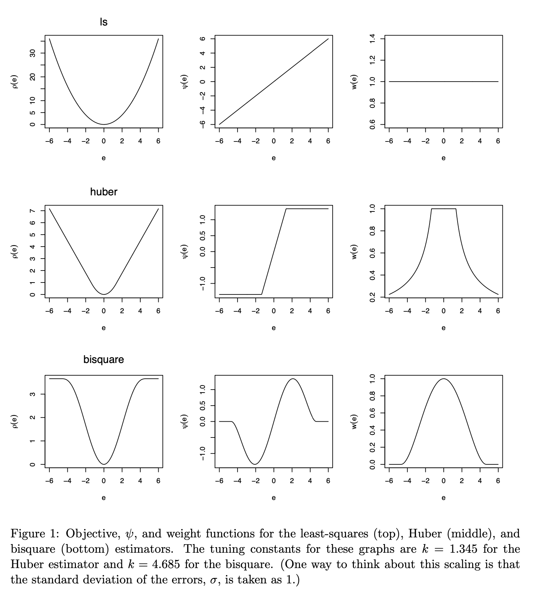
그림의 출처: Fox 와/과 Weisberg (2018)
10.3.3 기타 방법
최소절사제곱 추정량(least trimmed square; LTS)은 평균을 추정할 경우 절삭평균(trimmed mean)의 개념을 적용한 추정량이다. 잔차의 크기를 절대값 순으로 정렬하고 일정 비율의 큰 잔차를 가지는 관측치를 제외한 후에 추정량을 계산한다. 절삭하는 비율은 일반적으로 다음과 같이 설정한다.
\[ \frac{3n+p+1}{4} \]
MM-추정량은 M-추정법과 LTS-추정법을 결합한 추정법이다.
10.3.4 예제
열차 여객 운송에서 최종 탑승객의 수를 예측하는 경우를 고려하자. 출발 10일 전의 예약한 사람의 수(reserved) 와 당일 실제 탑승객의 수(boarding) 의 관계를 이용하여 탑승객의 수를 10일 전에 예측하려고 한다.
예약한 사람의 수(reserved) 와 당일 실제 탑승객의 수(boarding) 에 대한 과거 자료(20개의 자요)를 얻어서 다음과 같이 데이터프레임으로 만들고 관계를 산포도로 그려 보았다.
df2 reserved boarding
1 17 42
2 19 43
3 27 50
4 25 45
5 18 45
6 23 45
7 20 43
8 21 46
9 17 44
10 13 42
11 26 48
12 24 44
13 21 44
14 23 47
15 21 43
16 18 43
17 21 40
18 17 43
19 14 40
20 24 48df2 %>% ggplot(aes(x=reserved, y=boarding)) + geom_point() + theme_bw()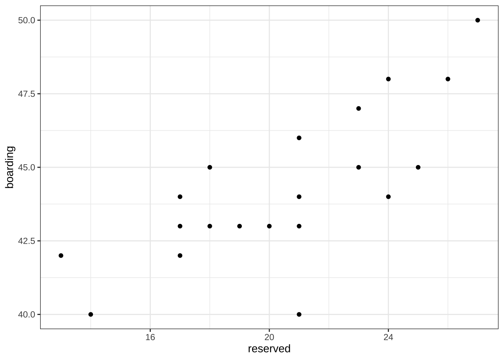
위의 그림에서 실제 탑승객의 수(boarding) 를 반응변수로 하는 단순회귀모형을 고려하였다. 추정된 회귀식을 이용한 예측식은 아래 그림에서 파란 선으로 나타난다.
roblm1 <- lm(boarding ~ reserved , data = df2)
df2$pred <- predict(roblm1)
summary(roblm1)
Call:
lm(formula = boarding ~ reserved, data = df2)
Residuals:
Min 1Q Median 3Q Max
-4.5275 -1.0025 -0.2616 1.4770 2.4453
Coefficients:
Estimate Std. Error t value Pr(>|t|)
(Intercept) 33.9322 2.1923 15.478 7.62e-12 ***
reserved 0.5045 0.1054 4.785 0.000148 ***
---
Signif. codes: 0 '***' 0.001 '**' 0.01 '*' 0.05 '.' 0.1 ' ' 1
Residual standard error: 1.767 on 18 degrees of freedom
Multiple R-squared: 0.5598, Adjusted R-squared: 0.5354
F-statistic: 22.89 on 1 and 18 DF, p-value: 0.0001483df2 %>% ggplot(aes(x=reserved, y=boarding)) +
geom_point() +
stat_smooth(method = "lm", se = FALSE, data = df2,
formula = y ~x ) +
theme_bw()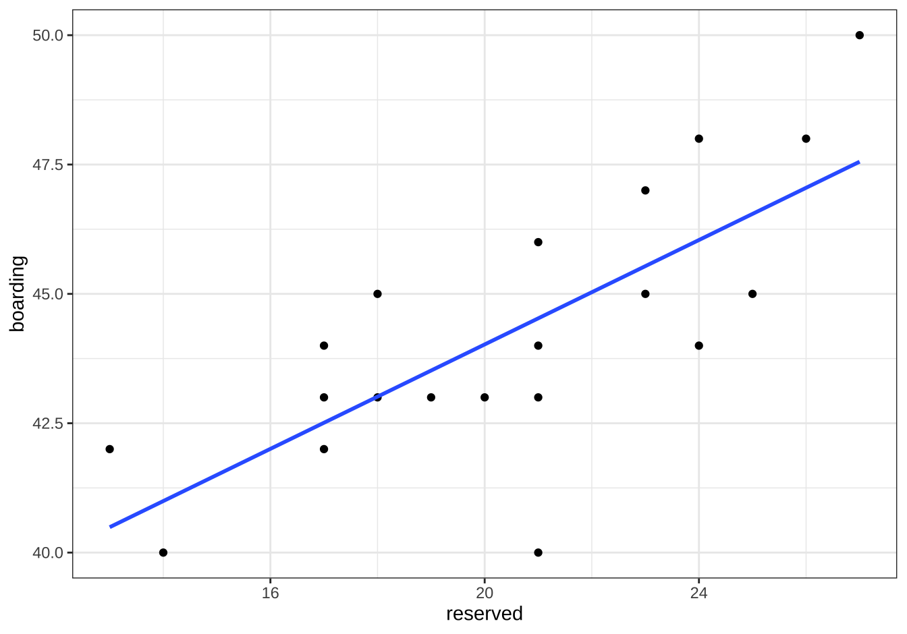
이제 예약-탑승객 자료에 새로운 자료가 추가되었다고 가정하자. 그런데 추가된 새로운 자료는 10일 전의 예약한 사람의 수가 다른 자료보다 월등하게 많다. 이러한 이상점은 도착역에 근처에서 큰 행사(예를 들면 지방축제, 공무원시험 등)가 있는 날에 흔히 나타난다.
df3 reserved boarding
1 17 42
2 19 43
3 27 50
4 25 45
5 18 45
6 23 45
7 20 43
8 21 46
9 17 44
10 13 42
11 26 48
12 24 44
13 21 44
14 23 47
15 21 43
16 18 43
17 21 40
18 17 43
19 14 40
20 24 48
21 49 44df3 %>% ggplot(aes(x=reserved, y=boarding)) + geom_point() + annotate("text", x = 49, y = 43, label = "이상점") +theme_bw()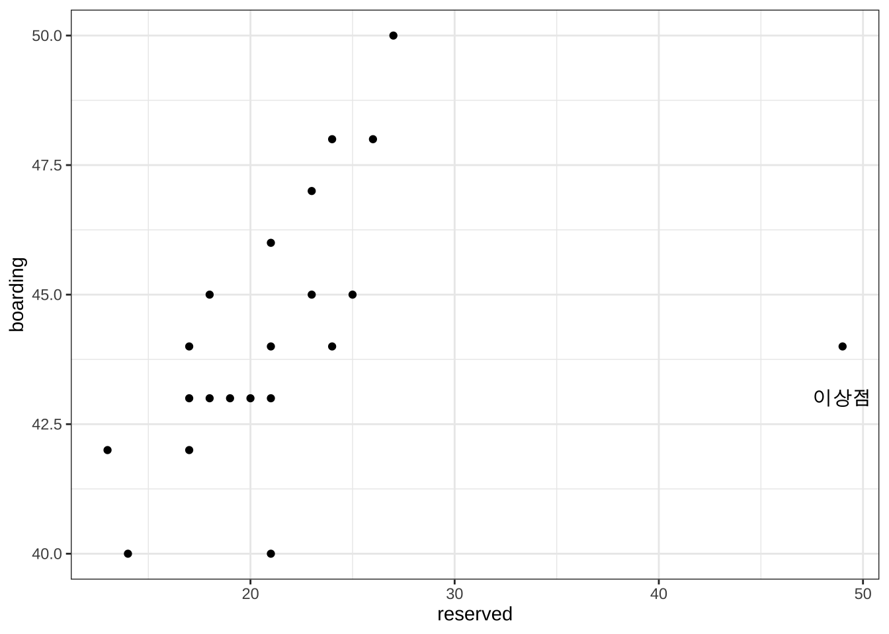
이렇게 이삼점이 자료에 포함되면 최종 탑승객을 추정하는 예측식에 큰 변화가 생겨서 예측의 정확성에 문제가 발생하게 된다.
roblm2 <- lm(boarding ~ reserved , data = df3)
df3$predLM <- predict(roblm2)
summary(roblm2)
Call:
lm(formula = boarding ~ reserved, data = df3)
Residuals:
Min 1Q Median 3Q Max
-4.1348 -1.1136 -0.5177 1.2482 5.0994
Coefficients:
Estimate Std. Error t value Pr(>|t|)
(Intercept) 41.4542 1.7017 24.36 8.59e-16 ***
reserved 0.1277 0.0742 1.72 0.102
---
Signif. codes: 0 '***' 0.001 '**' 0.01 '*' 0.05 '.' 0.1 ' ' 1
Residual standard error: 2.413 on 19 degrees of freedom
Multiple R-squared: 0.1348, Adjusted R-squared: 0.08924
F-statistic: 2.96 on 1 and 19 DF, p-value: 0.1016아래 그림의 파란 선은 이상점이 없을 때 에측식이고 빨간 선은 이상점이 포함된 경우의 예측식이다.
df3 %>% ggplot(aes(x=reserved, y=boarding)) +
geom_point() +
stat_smooth(method = "lm", se = FALSE, data = df3,
formula = y ~x , colour="red" ) +
geom_line(data=df2, aes(reserved, pred ), colour="blue" ) +
theme_bw()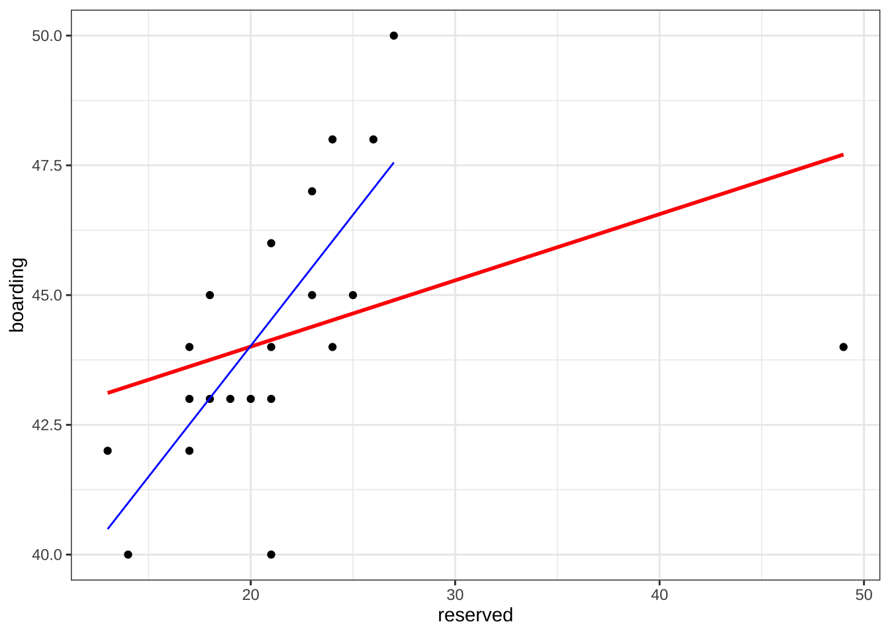
이렇게 많은 수의 회귀분석을 계속 수행하는 경우 이상점이 포함된 경우에는 회귀식을 적합할 때마다 잔차분석을 수행하기 어렵다. 따라서 이러한 경우는 로버스트 회귀식을 적용하면 잔차분석을 일일이 수행하지 않아도 이상점의 영향을 자동적으로 축소할 수 있다.
이제 위에서 언급한 MM-추정법을 이용하여 예측식을 적합해 보자.
roblm3 <- rlm(boarding ~ reserved , method= "MM", data = df3)
df3$predMM <- predict(roblm3)
summary(roblm3)
Call: rlm(formula = boarding ~ reserved, data = df3, method = "MM")
Residuals:
Min 1Q Median 3Q Max
-14.7871 -1.0982 -0.5787 1.3953 2.3562
Coefficients:
Value Std. Error t value
(Intercept) 33.9679 1.2762 26.6165
reserved 0.5065 0.0556 9.1026
Residual standard error: 2.038 on 19 degrees of freedom아래 그림는 MM-추정량을 이용하여 최종 탐승객수에 대한 추정모형을 적합한 결과이다. 그림의 파란 선은 이상점이 없을 때 예측식이고 빨간 선은 이상점이 포함된 경우의 MM-추정에 의한 예측식이다. 예측 결과를 보면 MM-추정량은 추기된 이상치의 영향을 받지 않는 것으로 나타난다.
df3 %>% ggplot(aes(x=reserved, y=boarding)) +
geom_point() +
geom_line(data=df3, aes(reserved, predMM ), colour="red" ) +
geom_line(data=df2, aes(reserved, pred ), colour="blue" ) +
theme_bw()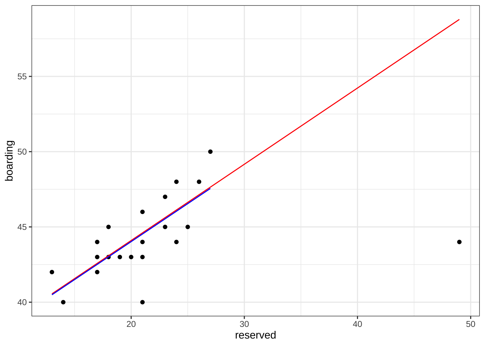
10.4 비선형 회귀분석
10.4.1 예제: 철도 여객 운송
철도 여객 운송은 사람들이 장거리 이동을 하는 경우 많이 이용한다. 하루에고 백 대가 넘는 열차가 운행되며 하나의 열차는 출발역에서 시작하여 중간에 여러 역에 정차함으로서 여러 지역 간의 여행을 가능하게 한다. 이렇게 하루에도 수 천개의 출발지와 목적지를 가지는 기차 노선이 운영되고 있다. 따라서 여객 운송을 관리하는 주체는 여객 노선의 수요를 예측하고 좌석을 합리적이고 효율적으로 할당하는 작업이 필요하다.
다음은 A역에서 B역으로 승객을 수송하는 고속열차의 예약 현황을 일별로 나타낸 자료이다. 출발일 20일 전부터 예약을 받으며 출발일에 수송할 수 있는 승객의 최대 수는 50명이다.
예약 자료와 그에 대한 그림을 그려보면 다음과 같다.
df %>% head() days reserved
1 -20 1
2 -19 0
3 -18 0
4 -17 2
5 -16 0
6 -15 0df %>% ggplot(aes(x=days, y=reserved)) +
geom_point() +
labs(x="출발전 일수", y="예약 인원수") +
theme_bw()
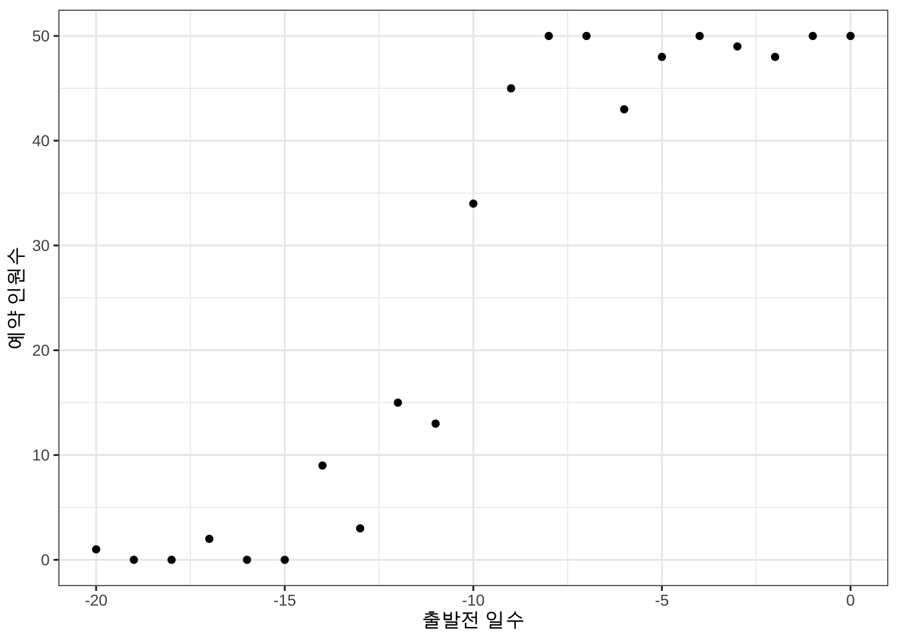
예약 현황을 일별로 나타낸 그림 그림 10.1 의 특징을 보면 다음과 같다.
- 예약 인원수는 가장 작은 값이 0명, 가장 큰 값이 50명 이라는 제약이 있다.
- 예약 인원수는 일반적으로 출발일에 가까와 지면서 증가를 하는 경향이 있다.
- 예약 인원수는 특정 시점에서 급격하게 증가한다.
- 증가를 하지만 할당된 50 좌석을 넘을 수 는 없다 (수렴성).
10.4.2 선형모형의 한계
이제 열차 예약 자료를 예약전 일수(days)을 설명변수로 하고 예약 인원 수(reserved)를 반응변수로 하는 단순 회귀모형을 적합해보자.
아래 그림에서 볼 수 있듯이 단순 회귀모형은 예약 자료의 특성(최소/최대 예약 인원, 수렴성 등)을 전혀 반영하지 못한다.
lm1 <- lm(reserved ~ days, data = df)
summary(lm1)
Call:
lm(formula = reserved ~ days, data = df)
Residuals:
Min 1Q Median 3Q Max
-13.646 -6.625 -1.048 4.632 16.653
Coefficients:
Estimate Std. Error t value Pr(>|t|)
(Intercept) 60.0693 3.7477 16.03 1.71e-12 ***
days 3.3403 0.3206 10.42 2.70e-09 ***
---
Signif. codes: 0 '***' 0.001 '**' 0.01 '*' 0.05 '.' 0.1 ' ' 1
Residual standard error: 8.896 on 19 degrees of freedom
Multiple R-squared: 0.8511, Adjusted R-squared: 0.8432
F-statistic: 108.6 on 1 and 19 DF, p-value: 2.704e-09df %>% ggplot(aes(x=days, y=reserved)) +
geom_point() +
stat_smooth(method = "lm", se = FALSE, data = df,
formula = y ~x ) +
theme_bw()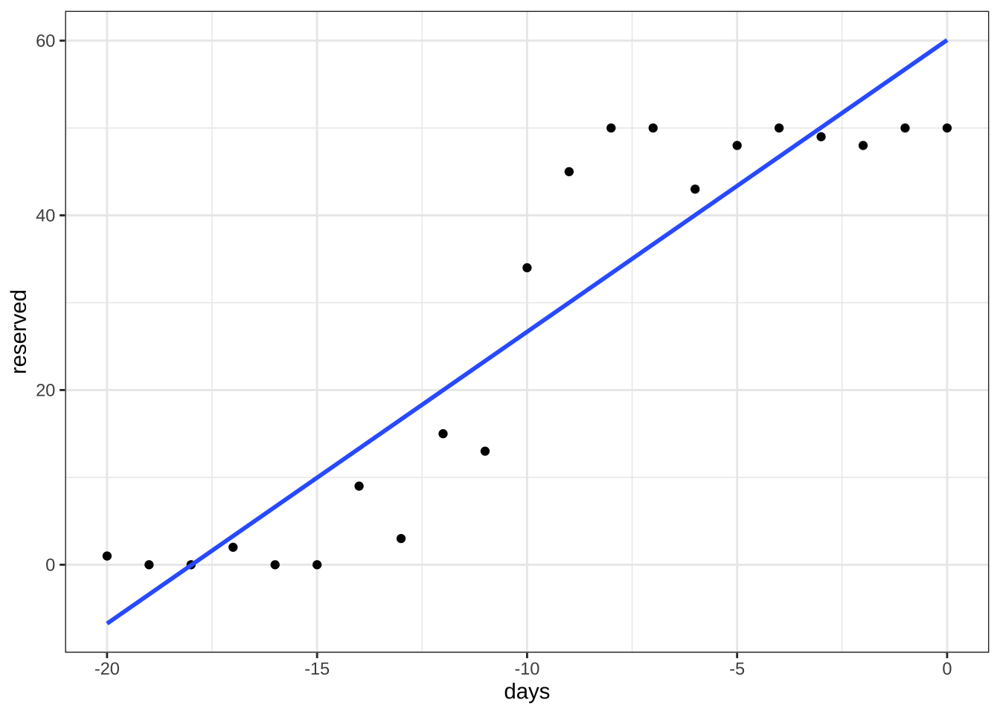
이제 더 복잡한 모향인 다항식 모형(polynomial regression)을 생각해보자. 다항식 모형은 반응변수가 가진 비선형적인 특성을 다소 고려할 수 있다. 이제 열차 예약 자료에 대하여 다음과 같은 3차 다항식 모형을 고려해 보자.
\[ y = \beta_0 + \beta_1 t + \beta_2 t^2 + \beta_3 t^3 + e \]
3차 다항식 모형을 적합한 결과와 예측식의 그림은 다음과 같다.
3차 다항식을 고려한 모형은 일차식에 비하여 자료의 특성을 어느 정도 반영하였으나 예약 인원의 제약과 수렴성은 반영할 수 없다. 주목할 점은 3차 다항식 또는 고차 다항식도 기본적으로 회귀계수에 대한 선형모형이다.
lm2 <- lm(reserved ~ days+I(days^2) + I(days^3), data = df)
summary(lm2)
Call:
lm(formula = reserved ~ days + I(days^2) + I(days^3), data = df)
Residuals:
Min 1Q Median 3Q Max
-9.8672 -3.3632 -0.1931 3.6205 10.7646
Coefficients:
Estimate Std. Error t value Pr(>|t|)
(Intercept) 44.352532 4.475318 9.910 1.77e-08 ***
days -6.187604 1.986322 -3.115 0.006297 **
I(days^2) -1.137947 0.234147 -4.860 0.000147 ***
I(days^3) -0.036170 0.007687 -4.705 0.000204 ***
---
Signif. codes: 0 '***' 0.001 '**' 0.01 '*' 0.05 '.' 0.1 ' ' 1
Residual standard error: 6.067 on 17 degrees of freedom
Multiple R-squared: 0.938, Adjusted R-squared: 0.9271
F-statistic: 85.74 on 3 and 17 DF, p-value: 1.813e-10df %>% ggplot(aes(x=days, y=reserved)) +
geom_point() +
stat_smooth(method = "lm", se = FALSE, data = df,
formula = y ~x+I(x^2) + I(x^3) ) +
theme_bw()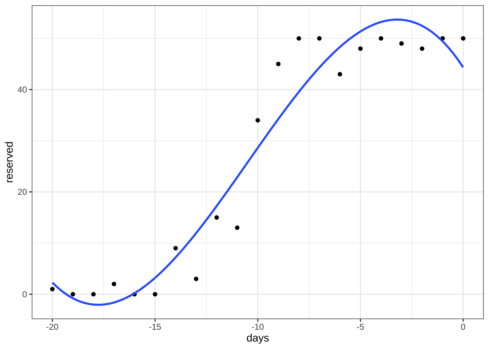
10.4.3 비선형 모형
비선형 모형은 반응변수의 변화를 설명변수에 대한 선형모형으로 표현할 수 없는 경우 사용되는 모형이다.
반응변수의 변화가 설명변수에 대한 단순한 선형모형으로 표현이 안되는 경우 변수의 변환(예를 들어 로그 변환) 이나 고차원 항을 고려해서 변환된 모형으로 적합할 수 있다. 하지만 이러한 변수 변환이나 고차식의 포함 등 으로 반응변수의 변화를 설명할 수 없는 경우도 있다.
이렇게 반응변수의 변화가 가지는 특성을 반영할 수 있는 비선형 함수를 사용한 모형을 비선형 회귀모형이라고 부른다. 비선형 회귀모형은 반응변수의 중요한 특성을 미리 파악할 수 있는 경우 주로 사용된다. 반응값의 중요한 특성을 반영할 수 있는 비선형 함수를 모형으로 사용하는 것이다. 따라서 비선형 회귀분석은 ㅈ자료가 가지는 중요한 특성과 자료가 생성되는 자세한 과정에 대한 과학적인 모형을 알 고 있는 경우에 주로 사용된다.
\[ y_i = f(x_i, \pmb \beta) + e_i \tag{10.7}\]
예를 들어 강근석 와/과 유형조 (2016) 예제 9.1 은 식물의 성장 속도에 대하여 다음과 같은 비선형 모형인 미캘리스-멘텐(Michaelis-Menten) 모형을 고려한다.
\[ f(x; \theta_1, \theta_2) = \frac{\theta_1 x}{\theta_2 + x} \]
위의 미캘리스-멘텐 모형에서 모수 \(\theta_1\) 과 \(\theta_2\) 는 다음과 같은 특별한 의미를 가지고 있다.
| 모수 | 설명 | R SSmicmen() 함수의 인자 |
|---|---|---|
| \(\theta_1\) | 수평 수렴 한계(horizontal asymptote) | Vm |
| \(\theta_2\) | \(y=\theta_1 /2\) 가 되는 \(x\) 값 | k |
위의 열차 예약에 대한 예제에서 나타나는 특성은 반응 변수의 최소값과 최대값이 존재한다는 것이며 독립변수가 증가하면 반응값이 수평적으로 수렴상태(horizontal asymtote)에 이른다는 것이다. 또한 어느 시점이 되면 반응변수가 매우 빠르게 증가한다. 이러한 미리 파악된 반응값의 특성을 반영할 수 있는 비선형 함수를 모형으로 선택해야 한다.
열차 예약 자료와 같은 반응값의 한계와 수렴성이 있는 모형을 설명할 때 자주 사용되는 모형이 아래와 같은 로지스틱(logistic) 함수이다.
\[ y=f(x; \phi_1, \phi_2, \phi_3) = \frac{\phi_1} { 1+\exp[(\phi_2 -x)/\phi_3]} \tag{10.8}\]
위의 로지스틱 함수 식 10.8 에서 나타난 3개의 모수 \(\phi_1\), \(\phi_2\), \(\phi_3\) 는 반응변수의 변화에 대한 특별한 의미를 지니고 있으며 그 설명은 다음 표와 그림과 같다.
| 모수 | 설명 | R SSlogis() 함수의 인자 |
|---|---|---|
| \(\phi_1\) | 수평 수렴 한계(horizontal asymptote) | Asym |
| \(\phi_2\) | \(y=\phi_1 /2\) 가 되는 \(x\) 값 | xmid |
| \(\phi_3\) | 크기 모수 (scale parameter) | scal |
knitr::include_graphics(here::here("myimages","logistic.png"))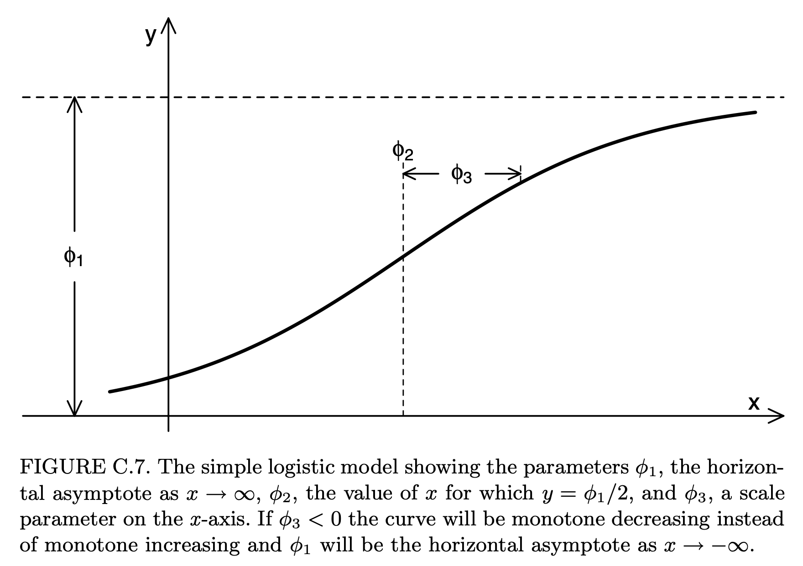
위의 그림의 출처는 Pinheiro 와/과 Bates (2006) 이며 로지스틱 함수 외의 다양한 비선형 모형의 정의와 그에 대한 설명도 Pinheiro 와/과 Bates (2006) 또는 강근석 와/과 유형조 (2016) 의 표 9.2 에서 찾아볼 수 있다.
10.4.4 비선형모형의 적합
비선형 모형의 적합은 함수 nls() 를 이용한다. 식 10.8 에서 정의된 로지스틱 함수는 R 함수 SSlogis() 함수로 미리 정의되어 있다. 함수 SSlogis()의 인자는 다음과 같이 4개가 필요하며 인자 input 은 독립변수이고 나머지 3개의 인자 Asym, xmid, scal 은 표 @ref(tab:logistic)) 에 모수와 관계가 설명되어 있다.
SSlogis(input, Asym, xmid, scal)함수 SSlogis() 는 Self-Starting 함수라고 부르며 주어진 자료에 대하여 모수의 초기값을 지정해주지 않아도 내부에서 자동적으로 계산해 주는 기능이 있다. 예를 들어서 열차 예약 자료에 대하여 로지스틱 함수를 함수 SSlogis() 로 적합하는 경우, 사용되는 초기값은 함수 getInitial() 를 사용하여 다음과 같이 계산해준다.
getInitial(reserved ~ SSlogis(days, Asym, xmid, scal), data = df) Asym xmid scal
49.2546737 -10.6613959 0.9315841 이제 함수 nls() 와 SSlogis() 를 이용하여 로지스틱 함수 식 10.8 로 열차 예약 자료를 적합해 보자.
fm1 <- nls(reserved ~ SSlogis(days, Asym, xmid, scal), data = df)
summary(fm1)
Formula: reserved ~ SSlogis(days, Asym, xmid, scal)
Parameters:
Estimate Std. Error t value Pr(>|t|)
Asym 49.2547 1.2276 40.122 < 2e-16 ***
xmid -10.6614 0.1782 -59.824 < 2e-16 ***
scal 0.9316 0.1542 6.042 1.03e-05 ***
---
Signif. codes: 0 '***' 0.001 '**' 0.01 '*' 0.05 '.' 0.1 ' ' 1
Residual standard error: 3.417 on 18 degrees of freedom
Number of iterations to convergence: 0
Achieved convergence tolerance: 2.56e-06로지스틱 함수 식 10.8 로 적합한 모형의 예측값을 그림으로 다음과 같이 나타낼 수 있다. 로지스틱 함수가 가지고 잇는 특성으로 인하여 예약 자료에 대한 적합이 적절한 것을 알 수 있다.
df %>% ggplot(aes(x=days, y=reserved)) +
geom_point() +
stat_smooth(method = "nls", se = FALSE, data = df,
formula = y ~ SSlogis(x, Asym, xmid, scal),
method.args = list( start=list ( Asym=coef(fm1)[1],xmid=coef(fm1)[2], scal=coef(fm1)[3] ))) +
theme_bw()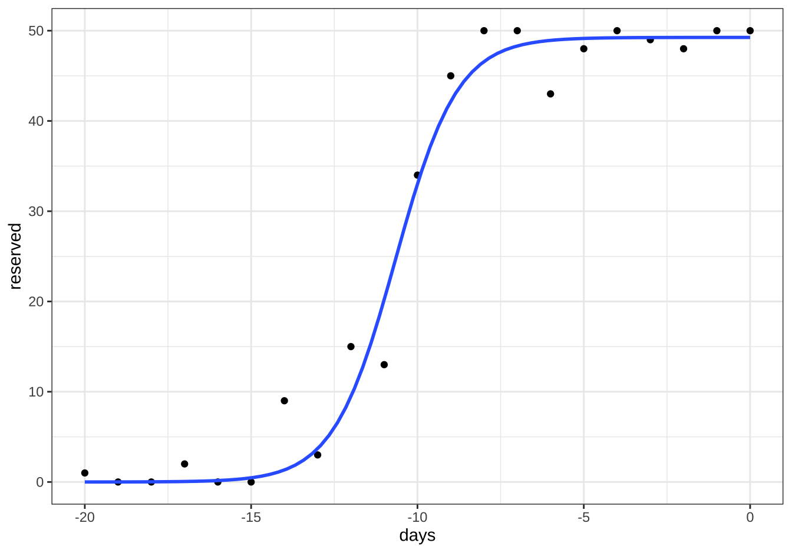
10.4.5 비선형 회귀의 추론
- 비선형 회귀분석에서도 모수에 대한 추론, 즉 가설검정과 신뢰구간 등을 구할 수 있다. 단 모든 추론은 비선형 함수의 선형 근사(Gauss-Newton method)와 점근적 방법(asymptotic methods)에 기반한다. 선형화와 점근적 방법에 기반한 추론은 그에 대한 가정이 어느 정도 만족한 경우 유효하므로 분석 시 이러한 가정이 적합한지 판단해서 추론 결과를 사용해야 한다. 비선형 회귀분석에 대한 추론의 기초 이론과 주의할 점은 강근석 와/과 유형조 (2016) 의 363–367 페이지 에 설명되어 있다.
열차 예약 자료를 적합한 로지스틱 모형에서 각 모수에 대한 점근적 95% 신뢰구간은 다음과 같다.
confint(fm1) 2.5% 97.5%
Asym 46.7686165 51.829073
xmid -11.0484643 -10.299248
scal 0.5971395 1.32976610.4.6 유의할 사항
비선형 회귀 모형을 고려한 분석을 수행하는 경우 다음과 같은 사항들에 대하여 유의해야 한다.
비선형 회귀모형을 적합하는 경우 모수의 초기값을 설정해 주어야 한다. 사용하는 함수에 따라서 초기값이 자동적으로 계산되는 경우도 있다. 일반적으로 모수의 초기값은 경험과 지식을 바탕으로 자료에서 적절하게 정해져야 한다. 잘못 선정된 초기값은 가끔 모수의 부정확한 추정을 일으킬 수 있다. 모수의 초기값 설정에 대한 설명은 강근석 와/과 유형조 (2016) 의 9.2.3 절에 있다.
비선형 회귀 모형은 주로 반응값 변화에 대한 과학적인 모형이 존재하는 경우 주로 사용된다. 예를 들어 약동력학(pharmacokinetics) 에서 약의 성분이 인체에 퍼지는 속도 등을 미분 방정식으로 유도한 칸막이 모형(compartment model)이 대표적인 예이다. 따라서 자료의 특성을 반영하는 적절한 비선형 모형을 선택해야 한다.
비선형 회귀모형에서는 모수를 표현하는 형식에 따라서 모형의 적합이 영향을 받을 수도 있다. 강근석 와/과 유형조 (2016) 의 369 페이지에 설명된 것처럼 미켈리스-멘텐(Michaelis-Menten) 비선형 모형식은 다음과 같이 두 개의 서로 다른 형태의 모수로서 표현될 수 있다.
\[ f(x; \theta_1, \theta_2) = \frac{\theta_1 x}{\theta_2 + x} \quad \text{or} \quad f(x; \beta_1, \beta_2 ) = \frac{x}{\beta_1 + \beta_2 x} \]
10.5 비모수 회귀모형
반응변수 \(Y\)와 설명변수 \(X\)가 다음과 같은 관계를 가진다고 하자.
\[ E(Y|X=x) = m(x) \]
이러한 관계를 회귀모형(regression model)이라고 하며 \(Y\)의 평균이 \(X\)에 따라서 변하는 괸계를 설정하는 모형이다. 만약 \(m(x)\)의 형태를 회귀계수의 선형식으로 나타낼 수 있다면 우리는 이를 선형회귀모형(linear regression model)이라고 한다.
\[ m(x) = \beta_1 x_1 + \beta_2 x_2 + \dots + \beta_p x_p \]
설명변수는 고정된 값이거나 또는 확률변수일 수도 있다.
비모수 회귀모형(nonparametric regression model)에서는 \(m(x)\)의 형태에 특별한 제한을 두지 않는다. 따라서 함수 \(m(x)\)는 무수히 많고 다양한 형태를 가질 수 있다. \(n\)개의 독립표본 \((Y_1,X_1),(Y_2,X_2),\dots,(Y_n,X_n)\)이 주어지면 비모수 회귀모형을 다음과 같이 기술할 수 있다.
\[ Y_i = m(X_i) + e_i \]
여기서 \(X_i\)와 독립인 오차항 \(e_i\)는 서로 독립이고 평균이 0이며 분산이 \(\tau^2\)인 확률변수로 가정한다. 따라서 설명변수의 값이 \(x\)라면 아래와 같이 나타낼 수 있다.
\[ E(Y_i|X_i =x) = E[ m(X_i) + e_i | X_i =x] = m(x) \]
10.5.1 편이-분산의 관계
만약 \(\hat m(x)\)가 \(m(x)\)의 추정량이라면 예측위험함수(prediction risk, prediction error) \(R(m, \hat m)\)는 다음과 같이 정의되고분해할 수 있다. 아래의 식을 유도할 때 편의상 \(X\)는 확률변수가 아닌 고정된 값이라고 할 것이며 확률변수인 경우에도 유사한 결과를 얻는다.
\[ \begin{aligned} R(m, \hat m) & = E[Y - \hat m(X) ]^2 \\ &= E[ (Y - m(X) + m(X) -E(\hat m(X)) + E(\hat m(X)) -\hat m(X) ]^2 \\ &= E[ (Y - m(X) ]^2 + E[m(X) -E(\hat m(X)) ]^2 + E[\hat m(X) -E(\hat m(X))]^2 \\ & \quad + cross-product-terms \end{aligned} \] 위의 식에서 다음과 같은 결과를 이용하면 교차항들(cross-product terms)은 0이 됨을 보일 수 있으며
\[ E [Y - m(X) ] =E(e) = 0, \quad E[\hat m(X) -E(\hat m(X))] =0 \]
또한 다음과 같은 관계를 이용하면
\[ \begin{aligned} E [Y - m(X) ]^2 & =E(e^2) = \tau^2 \\ bias(\hat m(X)) & = m(X) -E(\hat m(X)) \\ E[\hat m(X) -E(\hat m(X))]^2 & = Var(\hat m(X)) \end{aligned} \]
다음과 같이 예측위험함수의 분해가 가능하다.
\[ R(m, \hat m) = E[Y - \hat m(X) ]^2= \tau^2 + [bias(\hat m(X))]^2 + Var(\hat m(X)) \]
위의 식에서 \(X\)가 확률변수이면 먼저 \(X\)가 주어진 조건부 기대값을 생각하고 위와 같이 유도하면 다음과 같이 나타낼 수 있다.
\[ \begin{aligned} R(m, \hat m) & = E[Y - \hat m(X) ]^2 \\ & = E \left \{ E[ (Y - \hat m(X))^2 |X=x ] \right \} \\ & = \tau^2 + \int [bias(\hat m(x))]^2 dP(x) + \int Var(\hat m(x)) dP(x) \end{aligned} \]
10.5.2 Regressogram
Regressogram은 histogrm을 회귀모형에 적용한 방법이다. 아래의 함수 regressogram은 설명변수 벡터 x와 반응변수 벡터 y 를 인자로 받으며 구간 (left, right) 를 k개의 구간으로 나누어 각 구간마다 반응값들의 평균을 구해주는 함수이다. 이렇게 주어진 구간에서 평균값을 이용하여 회귀식을 추정하는 모형을 국소회귀(local regression)이라고 한다.
regressogram = function(x,y,left,right,k,plotit,xlab="",ylab="",sub=""){
### assumes the data are on the interval [left,right]
n = length(x)
B = seq(left,right,length=k+1)
WhichBin = findInterval(x,B)
N = tabulate(WhichBin)
m.hat = rep(0,k)
for(j in 1:k){
if(N[j]>0)m.hat[j] = mean(y[WhichBin == j])
}
if(plotit==TRUE){
a = min(c(y,m.hat))
b = max(c(y,m.hat))
plot(B,c(m.hat,m.hat[k]),lwd=3,type="s",
xlab=xlab,ylab=ylab,ylim=c(a,b),col="blue",sub=sub)
points(x,y)
}
return(list(bins=B,m.hat=m.hat))
}위의 프로그램에서 findInterval(x,B)은 전체 구간 B의 각 구간에 벡터 x 의 값들이 속해있는 정보를 계산해준다. 예를 들어서 \((0,10)\) 구간을 4개로 나누고 \((1,2,2,4,6,7,8)\)의 값이 어떤 구간에 속해있는지 다음과 같이 알 수 있다.
B = seq(0,10,length=5)
B[1] 0.0 2.5 5.0 7.5 10.0x = c(1,2,2,4,6,7,8)
findInterval(x,B)[1] 1 1 1 2 3 3 4이제 다음과 같은 \(m(x)\)를 고려하고 오차항 \(e\)가 정규분포 \(N(0, 3^2)\)을 따른다고 가정하고 임의로 100개의 독립표본을 만든다. \(x\)의 값들은 구간 \((0,1)\)에서 균등분포를 따른다.
\[ m(x) = 3 \sin(8x) \]
이제 구간의 수를 \(k=5,10,20\) 으로 바꾸면서 regressogram이 어떤 형태로 \(m(x)\)를 추정하는지 알아보자.
par(mfrow=c(2,2))
n = 100
x = runif(n)
y = 3*sin(8*x) + rnorm(n,0,.3)
plot(x,y,pch=20)
out = regressogram(x,y,left=0,right=1,k=5,plotit=TRUE, sub="k=5")
out = regressogram(x,y,left=0,right=1,k=10,plotit=TRUE, sub="k=10")
out = regressogram(x,y,left=0,right=1,k=20,plotit=TRUE, sub="k=20")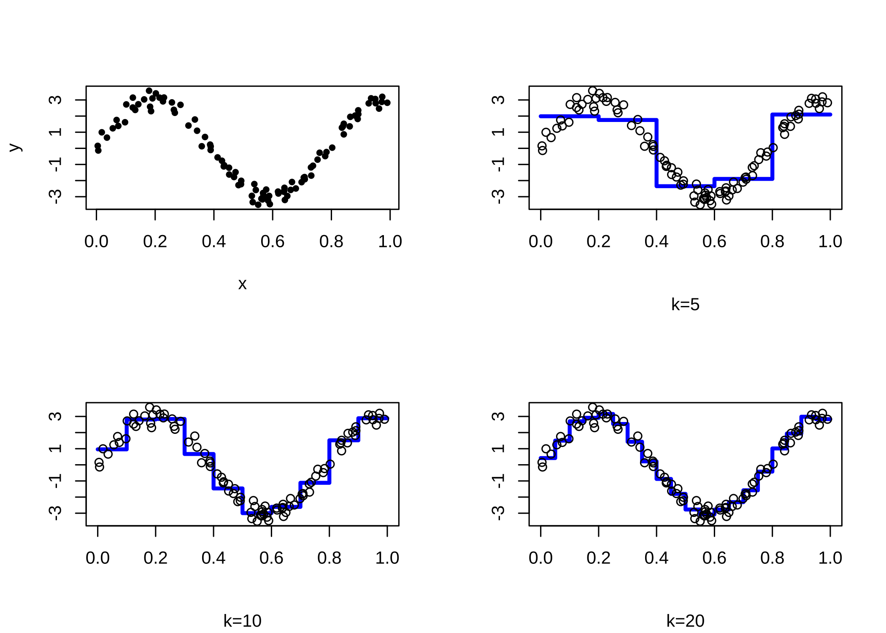
이제 라이브러리 ElemStatLearn에 있는 실제 자료 bone를 이용하여 regressogram 을 그려보자. 자료 bone의 반응변수는 density (Measurements in the bone mineral density) 이며 설명변수는 나이(age)이다. 남자와 여자를 따로 그렸으며 구간의 크기는 각각 \(k=10\)과 \(k=20\)을 사용해 보았다.
라이브러리 ElemStatLearn는 더 이상 R 라이브러리에 없으므로 다음 사이트에서 다운로드 받아서 직접 화일로 설치해야 한다
# 다운로드 사이트: https://cran.r-project.org/src/contrib/Archive/ElemStatLearn/
install.packages("~/Downloads/ElemStatLearn_2015.6.26.2.tar.gz", repos = NULL, type = "source")par(mfrow=c(2,2))
#install.packages("ElemStatLearn")
library(ElemStatLearn)
attach(bone)
age.male = age[gender == "male"]
density.male = spnbmd[gender == "male"]
out = regressogram(age.male,density.male,left=9,right=26,k=10,plotit=TRUE,
xlab="Age",ylab="Density",sub="Male")
out = regressogram(age.male,density.male,left=9,right=26,k=20,plotit=TRUE,
xlab="Age",ylab="Density",sub="Male")
age.female = age[gender == "female"]
density.female = spnbmd[gender == "female"]
out = regressogram(age.female,density.female,left=9,right=26,k=10,plotit=TRUE,xlab="Age",ylab="Density",sub="Female")
out = regressogram(age.female,density.female,left=9,right=26,k=20,plotit=TRUE,xlab="Age",ylab="Density",sub="Female")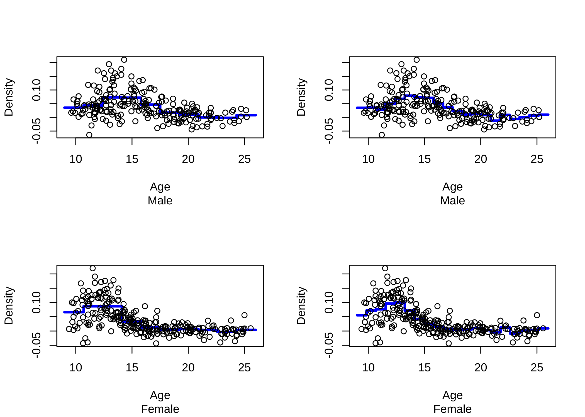
10.5.3 커널추정
10.5.3.1 커널추정법
국소회귀에서 가장 많이 사용되는 방법이 커널추정(kernel estimation) 방법이다. 다음의 함수 kernel(x,y,grid,h)은 표준편차의 크기가 \(h\)인 정규분포 확률밀도함수를 커널로 이용하여 주어진 값 \(x\)에서 반응변수 \(y\)들의 가중평균을 구해주는 함수이다. 변수 grid는 x축에서 커널을 계산할 떄 사용되는 점들 모아놓은 벡터이다.
\[ \hat m(x) = \frac{ \sum_{i=1}^n K \left ( \frac{x -X_i}{h} \right ) Y_i } { \sum_{i=1}^n K \left ( \frac{x -X_i}{h} \right ) } , \quad K \left ( \frac{x -y}{h} \right ) = (2\pi h^2)^{-1/2} \exp \left ( - \frac{(x -y)^2 }{2h^2} \right ) \]
kernel = function(x,y,grid,h){
### kernel regression estimator at a grid of values
n = length(x)
k = length(grid)
m.hat = rep(0,k)
for(i in 1:k){
w = dnorm(grid[i],x,h)
m.hat[i] = sum(y*w)/sum(w)
}
return(m.hat)
}다음의 함수 kernel.fitted(x,y,h)는 주어진 자료벡터 x,y와 구간의 크기 h에 대하여 반응변수의 예측값 \(\hat Y_i =\hat m_h(X_i)\) 을 커널추정으로 구해준다.
\[ \hat Y_i = \hat m(X_i) = \frac{ \sum_{j=1}^n K \left ( \frac{X_i -X_j}{h} \right ) Y_j } { \sum_{j=1}^n K \left ( \frac{X_i -X_j}{h} \right ) } = \sum_{j=1}^{n} l_j(X_i) Y_j \]
또한 위의 식에서 \(L_{ij} = l_j(X_i)\)라고 하면 다음과 같은 선형예측식에서 \(n \times n\) 행렬 \(L = \{ L_{ij} \}\)의 대각원소 \(L_{ii}\)도 계산해준다.
\[ \hat Y = L Y \]
kernel.fitted = function(x,y,h){
### fitted values and diaginal of smoothing matrix
n = length(x)
m.hat = rep(0,n)
S = rep(0,n)
for(i in 1:n){
w = dnorm(x[i],x,h)
w = w/sum(w)
m.hat[i] = sum(y*w)
S[i] = w[i]
}
return(list(fitted=m.hat,S=S))
}10.5.3.2 최적 구간의 길이 선택
다음의 함수 CV(x,y,H)는 자료벡터 x,y와 서로 다른 \(h\)의 값들을 모아 놓은 벡터 H를 받아서 다음과 같은 cross-validation의 값 \(CV\), \(GCV\), \(\nu\)를 계산해 주는 함수이다.
\[ \begin{aligned} CV & = \frac{1}{n} \sum_i^n [ Y_i - \hat m_h^{(-i)} (X_i) ] ^2 = \frac{1}{n} \sum_i^n \left ( \frac {Y_i - \hat m_h (X_i) }{1-L_{ii}} \right )^2 \\ GCV & = \frac{1}{ \left ( 1-\frac{\nu}{n} \right )^2 } \frac{1}{n} \sum_i^n ( Y_i - \hat m_h (X_i))^2 \\ \nu &= trace(L) \end{aligned} \]
CV = function(x,y,H){
### H is a vector of bandwidths
n = length(x)
k = length(H)
cv = rep(0,k)
nu = rep(0,k)
gcv = rep(0,k)
for(i in 1:k){
tmp = kernel.fitted(x,y,H[i])
cv[i] = mean(((y - tmp$fitted)/(1-tmp$S))^2)
nu[i] = sum(tmp$S)
gcv[i] = mean((y - tmp$fitted)^2)/(1-nu[i]/n)^2
}
return(list(cv=cv,gcv=gcv,nu=nu))
}이제 위에서 보았던 bone 자료에 대한 회귀식을 커널로 추정하려고 한다. 이때 CV 또는 GCV를 최소화하는 구간의 크기(bandwidth) \(h\)를 찾기위하여 구간 \((0.1,5)\)안에서 20개의 \(h\)값에 대한 CV 또는 GCV 값을 계산한다. 아래는 CV 또는 GCV 값을 최소로 하는 \(h\)값을 찾는 프로그램이다.
par(mfrow=c(1,2))
H = seq(.1,5,length=20)
H [1] 0.1000000 0.3578947 0.6157895 0.8736842 1.1315789 1.3894737 1.6473684
[8] 1.9052632 2.1631579 2.4210526 2.6789474 2.9368421 3.1947368 3.4526316
[15] 3.7105263 3.9684211 4.2263158 4.4842105 4.7421053 5.0000000out = CV(age.female,density.female,H)
plot(H,out$cv,type="l",lwd=3,xlab="Bandwidth",ylab="Cross-validation Score")
lines(H,out$gcv,lty=2,col="red",lwd=3)
plot(out$nu,out$cv,type="l",lwd=3,xlab="Effective Degrees of Freedom",ylab="Cross-validation score")
lines(out$nu,out$gcv,lty=2,col="red",lwd=3)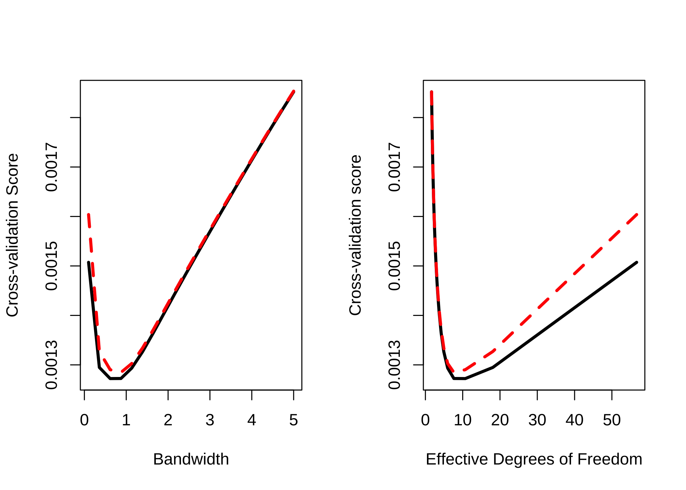
j = which.min(out$cv)
h = H[j]
h[1] 0.6157895위의 그래프에서 왼쪽은 \(h\)값에 대한 CV(검정 점선)과 GCV(빨간 점선)의 값에 대한 그래프이며 CV를 최소로 하는 \(h\)의 값은 \(0.6157895\)이다. 오른쪽 그래프는 유효 자유도 (Effective Degrees of Freedom) \(\nu\)에 대한 CV(검정 점선)과 GCV(빨간 점선)의 그래프이다.
par(mfrow=c(1,1))
grid = seq(min(age.female),max(age.female),length=100)
m.hat = kernel(age.female,density.female,grid,h)
plot(age.female,density.female,xlab="Age",ylab="Density")
lines(grid,m.hat,lwd=3,col="blue")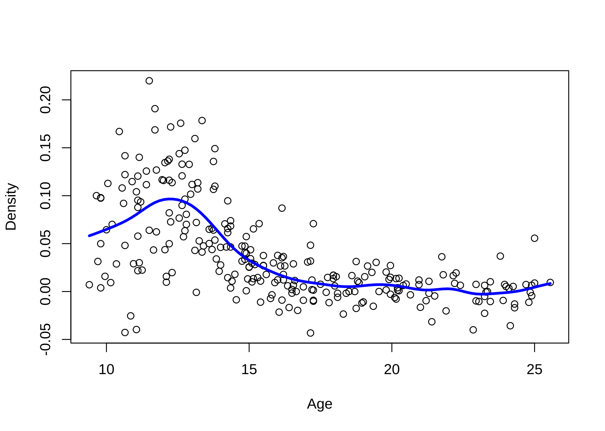
위의 그래프는 선택된 \(h=0.6157895\)을 이용하여 추정한 반응변수 density 의 커널회귀 함수 \(\hat m(x)\) 이다.
10.5.3.3 붓스트랩 신뢰 구간
다음 프로그램은 붓스트랩(Bootstrap)을 이용하여 주어진 \(x\)값에서 추정량 \(\hat m(x)\)의 표준오차 \(SE(x)\)를 구하는 프로그램이다.
boot = function(x,y,grid,h,B){
### pointwise standard error for kernel regression using the bootstrap
k = length(grid)
n = length(x)
M = matrix(0,k,B)
for(j in 1:B){
I = sample(1:n,size=n,replace=TRUE)
xx = x[I]
yy = y[I]
M[,j] = kernel(xx,yy,grid,h)
}
s = sqrt(apply(M,1,var))
return(s)
}아래는 추정량 \(\hat m(x)\)의 95% 신뢰구간을 구하는 프로그램이다. 붓스트랩의 반복수는 \(B=1000\)이다.
\[ CI(x) = [\hat m(x) - 2 SE(x) , \hat m(x) + 2 SE(x) ] \]
par(mfrow=c(1,1))
h = .7
grid = seq(min(age.female),max(age.female),length=100)
plot(age.female,density.female)
mhat = kernel(age.female,density.female,grid,h)
lines(grid,mhat,lwd=3)
B = 1000
se = boot(age.female,density.female,grid,h,B)
lines(grid,mhat+2*se,lwd=3,lty=2,col="red")
lines(grid,mhat-2*se,lwd=3,lty=2,col="red")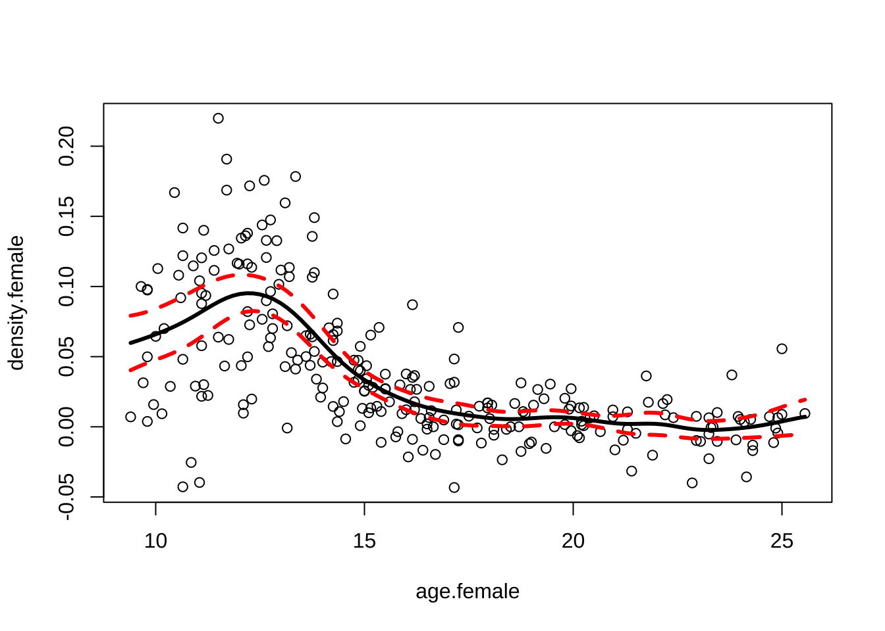
10.6 스플라인 회귀모형
10.6.1 함수의 기저
반응변수 \(Y\)와 설명변수 \(X\)가 다음과 같은 관계를 가진다고 하자.
\[ E(Y|X=x) = m(x) \]
이러한 관계를 회귀모형(regression model)이라고 하며 \(Y\)의 평균이 \(X\)에 따라서 변하는 괸계를 설정하는 모형이다. 만약 \(m(x)\)의 형태를 회귀계수의 선형식으로 나타낼 수 있다면 우리는 이를 선형 회귀모형(linear regression model)이라고 한다.
\[ m(x) = a+b_1 x_1 + b_2 x_2 + \dots + b_p x_p \]
설명변수는 고정된 값이거나 또는 확률변수일 수도 있다.
비모수 회귀모형(nonparametric regression model)에서는 \(m(x)\)의 형태에 특별한 제한을 두지 않는다. 따라서 함수 \(m(x)\)는 무수히 많고 다양한 형태를 가질 수 있다.
이제 설명변수의 수가 1개라고 가정하면 함수 \(m(x)\)를 가장 단순하게 표현할 수 있는 모형이 1차 회귀모형이다.
\[ y = a + b x + e \]
만약 반응변수와 설명변수의 관계가 선형이 아니라 비선형이라면 \(m(x)\)를 \(p\)-차 다항식으로 사용할 수 있다. \[ m(x) = a + b_1 x + b_2 x^2 + \dots + b_p x^p \tag{10.9}\]
이렇게 \(m(x)\)를 다항식으로 표현하는 것은 우리가 알 수 없는 함수를 \(p+1\)개의 기저들(basis), 즉 \(1\), \(x\), \(x^2\), ..,\(x^p\)의 선형조합으로 근사하는 것이며 다항식의 경우는 각 기저 \(N_k(x)\) 는 설명변수의 \(k\)-차 항 \(x^k\)이다.
\[ \beta_0 N_0(x) + \beta_1 N_1(x) + \beta_2 N_2(x) + \dots + \beta_p N_p(x) \tag{10.10}\]
일반적으로 임의의 함수는 다양한 형태의 기저들로 표현할 수 있으며 기저들의 형태에 따라 다음과 같은 것들이 있다.
- 다항식(polynimials)
- 퓨리에 함수(Fourier series)
- 웨이블릿 함수(Wavelet series )
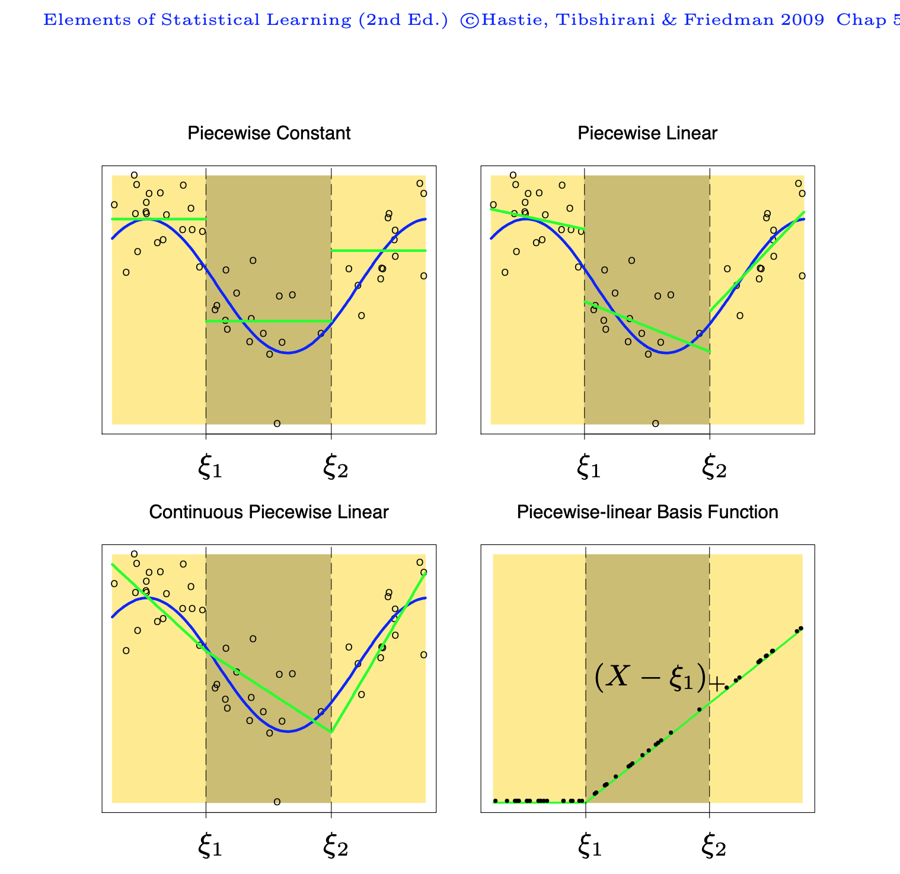
10.6.2 직선 스플라인
이제 \(n\)개의 자료 \((y_1,x_1),(y_2,x_2),\dots,(y_n,x_n)\)이 주어졌다고 하자. 편의상 설명변수 \(x\)가 구간 \((0,1)\)의 값이라고 가정한다. 설명변수들이 포함되는 구간 \((0, 1)\)를 \(K+1\)개의 구간 \(\{B_j =(\xi_{k-1}, \xi_k) | k=1,2,..,K+1 \}\) 으로 나누어 보자. 즉
\[ \xi_0 = 0 < \xi_1 < \xi_2 < \dots < \xi_{K-1} < \xi_K < 1 = \xi_{K+1} \]
위의 구간에서 \(K\)개의 내부점들 \(\xi_1 < \xi_2 < \dots < \xi_{K-1} < \xi_K\)은 일반적으로 knots(연결점)이라고 부른다,
이제 반응변수들의 평균 \(E(Y|x)\) 을 단순하게 각 구간에서 상수라고 가정하면
\[ E(Y|x) = a_k \quad \text{ if } x \in B_k \]
각 구간에 속하는 반응변수들의 평균으로 추정할 수 있다. 이러한 추정법을 우리는 Regressogram이라고 한다.
\[ \hat E(Y|x) = \frac{1}{n_k} \sum_{i=1}^n y_i I_{B_k}(x_i) \quad \text{ if } x \in B_k \tag{10.11}\]
이제 Regeressogram의 개념을 확장시켜서 각 구간의 회귀모형을 직선식으로 확장하여 보자. 즉
\[ E(Y|x) = a_k + b_k x \quad \text{ if } x \in B_k \tag{10.12}\]
모형 식 10.12 는 각 구간마다 회귀직선을 적합하는 것과 같은 모형이다. 이러한 모형에서 추정된 각 회귀식들은 각 구간의 연결점 \(\xi_1, \xi_2, \dots, \xi_{K}\) 에서 불연속이다. 각 연결점 \(\xi_k\)에서 연속인 회귀식들을 구할 수 있을까?
이제 구간 \((0,1)\)을 다음과 같이 \(K+1=3\)개의 구간으로 나누어 보자. 이 경우 연결점은 \(\xi_1\)과 \(\xi_2\), 두 개가 있다.
\[ B_1 =(0, \xi_1) \quad B_2 = (\xi_1, \xi_2) \quad B_3 = (\xi_2,1) \]
모형 식 10.12 에서 주어진 회귀계수는 모두 \(2(K+1)=6\) 개이며 추정값을 구하는 방법은 다음과 같은 오차제곱합을 구하는 최소제곱법을 사용할 수 있다.
\[ SSE = \sum_{x_i \in B_1} (y_i - a_1 -b_1 x_i)^2 + \sum_{x_i \in B_2} (y_i - a_2 -b_2 x_i)^2 + \sum_{x_i \in B_3} (y_i - a_3 -b_3 x_i)^2 \tag{10.13}\]
이제 모형 식 10.12 에서 구한 직선회귀식이 연결점 \(\xi_1\)과 \(\xi_2\)에서 연속이 되려면 다음과 같은 두 조건을 만족해야 한다.
\[ a_1 + b_1 \xi_1 = a_2 + b_2 \xi_1, \quad a_2 + b_2 \xi_2 = a_3 + b_3 \xi_2 \tag{10.14}\]
각 연결점의 연속을 만족하려면 위의 두 식을 만족해야 하므로 이제 추정해야 하는 모수의 개수는 4개이다. 왜냐하면 원래의 회귀계수의 개수 6 에서 제약식 2개의 개수를 제외해야 하기 떄문이다.
제약식 식 10.14 을 다시 쓰면 다음과 같이 쓸수 있으며
\[ \begin{aligned} a_2 & = a_1 + (b_1 - b_2) \xi_1 \\ a_3 & = a_2 + (b_2 - b_3 ) \xi_2 \\ & = a_1 + (b_1 - b_2) \xi_1 + (b_2 - b_3 ) \xi_2 \end{aligned} \]
이 제약식을 이용하여 오차제곱합 식 10.13 에서 두 번째 항과 세 번째 항을 다음과 같이 전개할 수 있다
\[ \begin{aligned} \sum_{x_i \in B_2} (y_i - a_2 -b_2 x_i)^2 & = \sum_{x_i \in B_2} (y_i - a_1 - (b_1 - b_2) \xi_1 -b_2 x_i)^2 \\ & = \sum_{x_i \in B_2} [y_i - a_1 - b_1 \xi_1 -b_2 (x_i - \xi_1)]^2 \\ & =\sum_{x_i \in B_2} [y_i - a_1 - b_1 x_i -(b_2-b_1) (x_i - \xi_1)]^2 \\ \sum_{x_i \in B_3} (y_i - a_3 -b_3 x_i)^2 & = \sum_{x_i \in B_3} (y_i - a_1 - (b_1 - b_2) \xi_1 - (b_2 - b_3 ) \xi_2 -b_3 x_i)^2 \\ & =\sum_{x_i \in B_3} [y_i - a_1 - b_1 \xi_1 +b_2 \xi_1 - b_2 \xi_2 -b_3( x_i - \xi_2) ]^2 \\ & =\sum_{x_i \in B_3} [y_i - a_1 - b_1 x_i + b_1 x_i - b_1 \xi_1 +b_2 \xi_1 - b_2 \xi_2 -b_3( x_i - \xi_2) ]^2 \\ & =\sum_{x_i \in B_3} [y_i - a_1 - b_1 x_i + b_1 (x_i - \xi_1) +b_2 (\xi_1 -x_i + x_i) - b_2 \xi_2 -b_3( x_i - \xi_2) ]^2 \\ &= \sum_{x_i \in B_3} [y_i - a_1 - b_1 x_i - (b_2 -b_1) (x_i - \xi_1) -(b_3-b_2)( x_i - \xi_2) ]^2 \end{aligned} \]
위의 전개식에서 모수를 다음과 같이 다시 정의하면
\[ \beta_0 = a_1, \quad \beta_1 = b_1, \quad \beta_2 =b_2-b_2 , \quad \beta_3 = b_3 - b_2 \]
오차제곱합 SSE는 다음과 같이 전개할 수 있다.
\[ \begin{aligned} SSE & = \sum_{x_i \in B_1} (y_i -\beta_0 -\beta_1 x_i)^2 + \sum_{x_i \in B_2} [y_i - \beta_0 - \beta_1 x_i -\beta_3 (x_i - \xi_1)]^2 \\ \notag & \quad + \sum_{x_i \in B_3} [y_i - \beta_0 - \beta_1 x_i - \beta_2 (x_i - \xi_1) -\beta_3 ( x_i - \xi_2) ]^2 \end{aligned} \tag{10.15}\]
식 10.15 에서 얻은 오차제곱합은 다음과 같은 회귀모형을 적합한 경우에 얻을 수 있는 오차제곱합이다.
\[ E(y|x) = \beta_0 + \beta_1 x + \beta_2 (x-\xi_1)_{+} + \beta_3 (x-\xi_2)_{+} \tag{10.16}\]
위의 식에서 함수 \((x)_{+}\) 는 다음과 같이 정의된 함수이다.
\[ (x)_{+} = \begin{cases} x & \text{ if } x \ge 0 \\ 0 & \text{ if } x < 0 \end{cases} \]
이제 연결점(knots)에서 연속인 조건을 만족하는 직선들을 추정하는 문제는 식 10.16 에 주어진 회귀식을 추정하는 문제와 같음을 보였다. 즉, 주어진 구간에서 서로 연결되는 최적의 직선식을 구하는 문제는 함수를 다음과 같은 기저로 조합된 것으로 보고 최적의 계수를 구하는 것과 동일한 문제이다.
\[ N_0(x) = 1, \quad N_1(x) =x, \quad N_2(x) = (x-\xi_1)_{+}, \quad N_3(x) =(x-\xi_2)_{+} \]
위의 기저의 특징은 일부 기저함수의 값이 주어진 구간의 전 \(\xi_1\)과 \(\xi_2\)에 의존한다는 것이다. 아래 그림은 연결점이 2개인 경우 4개의 기저를 나타내는 그림이다.
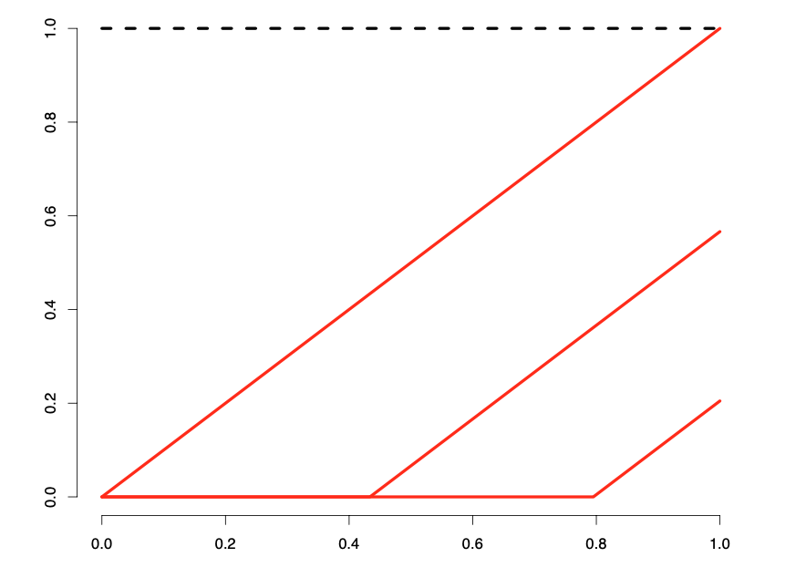
이제 위의 문제에서 만약 \(K+1\)개의 구간이 있다면 원래 회귀계수의 개수 \(2(K+1)\)에서 제약식의 수 \(K\)를 제외한 총 \(K+2\) 개의 기저가 필요하며 다음과 같다.
\[ N_0(x) = 1, \quad N_1(x) =x, \quad N_k(x) = (x-\xi_k)_{+}, k=1,2,\dots,K \]
10.6.3 스플라인 회귀
이제 주어진 구간에서 직선식이 아닌 \(p\)-차 다항식 식 10.9 을 고려하자. \(K+1\)개의 구간에서 \(p\)-차 다항식이 매우 부드럽게 연결되기 위한 조건은 연결점들에서 연속이며 더 나아가 \(1,2,..,p-1\)차의 미분값이 동일한 것이다.
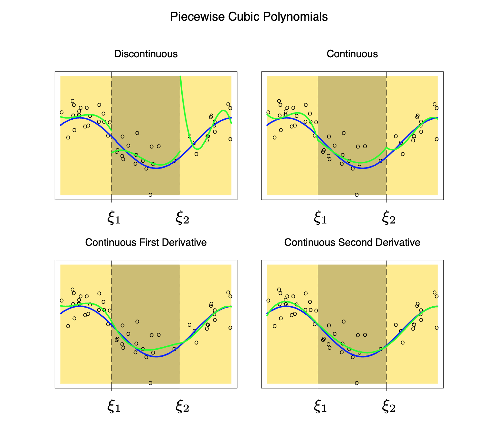
이러한 조건을 만족하는 최적의 \(p\)-차 다항식을 구하는 문제는 다음과 같은 \(K+p+1\)개의 기저로 표현된 함수식에서 최적의 함수를 구하는 문제와 같다. 아래의 기저들을 절단된 다항함수(truncated power) 기저라고 부른다.
\[ \begin{aligned} N_j (x) & = x^j, \quad j=0,1,2,\dots, p \\ \notag N_{p+k} (x) & = (x-\xi_k)^p_{+}, \quad k=1,2,\dots, K \end{aligned} \tag{10.17}\]
위와 같은 스플라인 회귀에서 가장 자주 사용되는 것은 3차 스플라인 회귀(Cubic spline, \(p=3\))이다.
각 연결점에서 연속이고 1차와 2차 미분값이 같은 조건을 주고 각 구간에서 다항식을 구하는 것이다. 이때 구간의 하한과 상한, 즉 경계점(boundary)에서 직선의 성질을 가지는 조건, 즉
\[ m''(0)=m'''(0) =0, \quad m''(1) = m'''(1) =0 \tag{10.18}\]
을 만족하는 스플라인을 자연 스플라인(natural spline)이라고 부르며 가장 자주 사용된다.
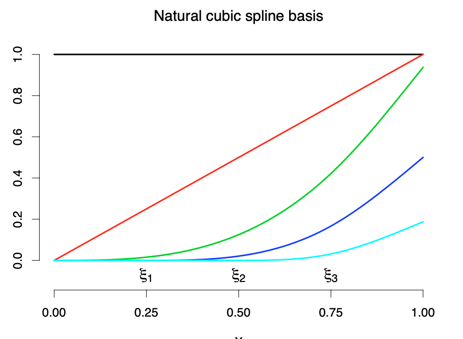
예제로서 다음과 같은 모형에서 생성된 자료를 가지고 자연 스플라인을 적합해 보자.
\[ y_i = 3 \sin(8x_i) + e_i,\quad e_i \sim N(0,(0.3)^2) \]
다음은 100개의 자료를 가지고 2개의 연결점 \(\xi_1=0.2\)와 \(\xi_2 = 0.6\)을 이용한 3차 스플라인 함수를 적합하고 그리는 프로그램이다.
스플라인 함수를 사용하려면 splines 패키지가 필요하다.
library(splines)
n = 100
x = runif(n)
x.grid = seq(0,1,length.out = 100)
y = 3*sin(8*x) + rnorm(n,0,.3)
fit = lm(y ~ ns(x,knots = c(0.2,0.6)) )
plot(x,y,pch=20)
pred = predict(fit,newdata=list(x=x.grid))
lines(x.grid, pred,col="red")
abline(v=c(0.2,0.6), col = 'blue')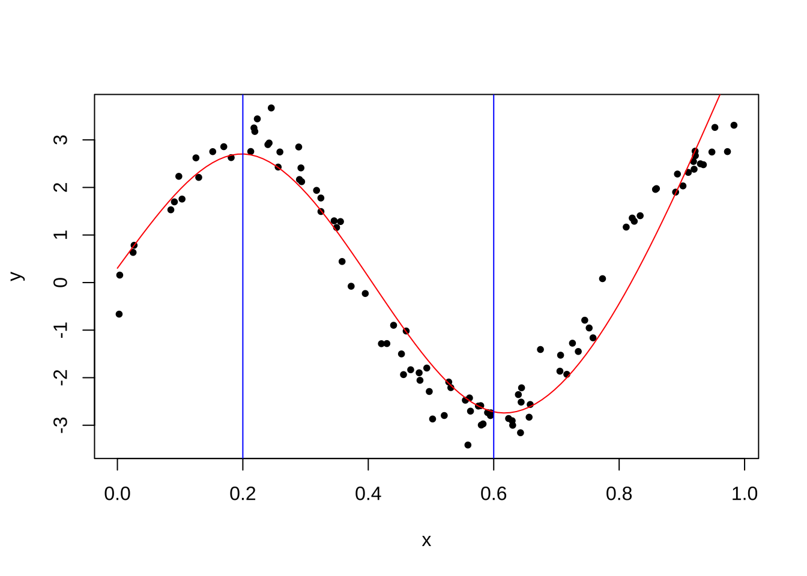
다음 프로그램에서는 연결점을 자동으로 선택하고 차수를 3차(자유도=3)로 사용하는 방법이다.
x = runif(n)
y = 3*sin(8*x) + rnorm(n,0,.3)
fit = lm(y ~ ns(x,df=3) )
summary(fit)
Call:
lm(formula = y ~ ns(x, df = 3))
Residuals:
Min 1Q Median 3Q Max
-1.55542 -0.39760 0.03705 0.38510 1.22418
Coefficients:
Estimate Std. Error t value Pr(>|t|)
(Intercept) 0.6797 0.1824 3.726 0.000328 ***
ns(x, df = 3)1 -8.5991 0.2437 -35.279 < 2e-16 ***
ns(x, df = 3)2 3.2399 0.4682 6.919 5.08e-10 ***
ns(x, df = 3)3 1.7166 0.1908 8.995 2.15e-14 ***
---
Signif. codes: 0 '***' 0.001 '**' 0.01 '*' 0.05 '.' 0.1 ' ' 1
Residual standard error: 0.5706 on 96 degrees of freedom
Multiple R-squared: 0.9306, Adjusted R-squared: 0.9284
F-statistic: 429.1 on 3 and 96 DF, p-value: < 2.2e-16plot(x,y,pch=20)
pred = predict(fit,newdata=list(x=x.grid))
lines(x.grid, pred,col="red")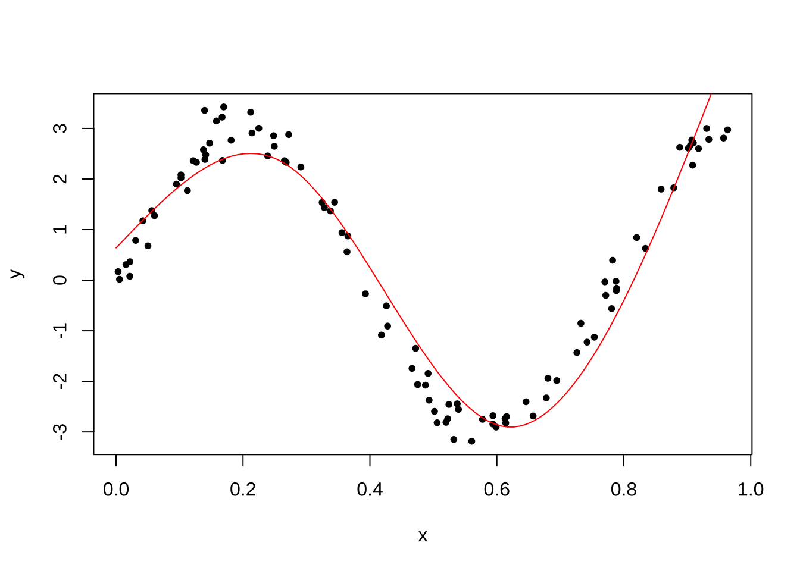
다음 프로그램에서는 25개의 연결점을 선택하고 차수를 3차(자유도=3)로 사용하는 방법이다. 과적합(overfitting)이 발생하였다.
kknots=seq(0+0.1,1-0.1,len=25)
x = runif(n)
y = 3*sin(8*x) + rnorm(n,0,.3)
fit = lm(y ~ ns(x,df=3,knots = kknots ))
plot(x,y,pch=20)
pred = predict(fit,newdata=list(x=x.grid))
lines(x.grid, pred,col="red")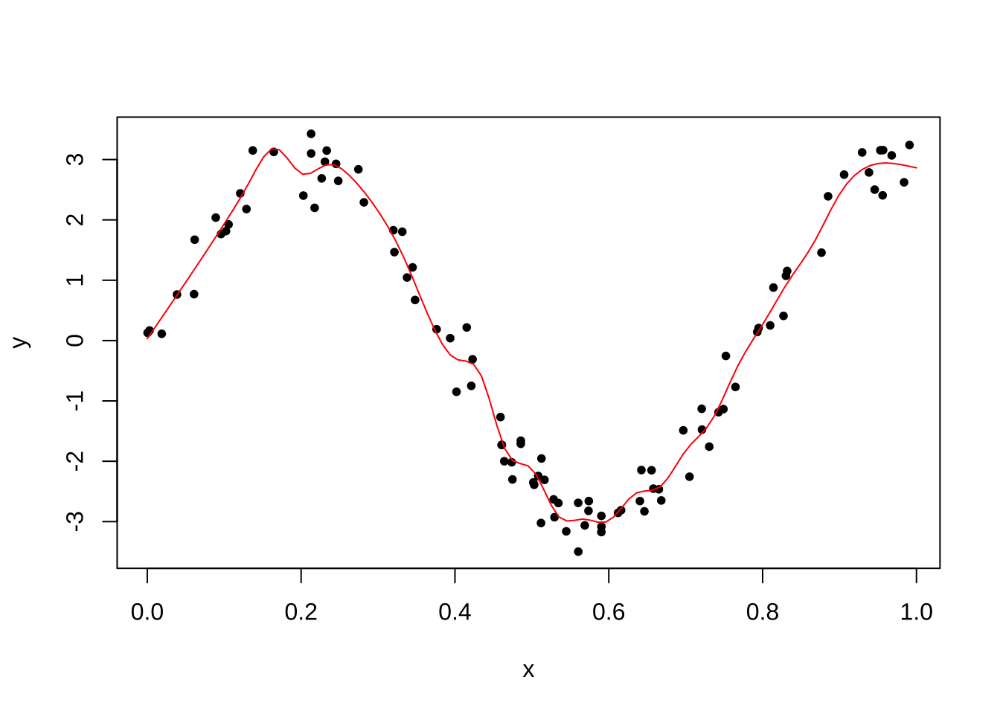
10.6.4 평활 스플라인
스플라인 회귀에서 추정된 평균 함수 \(\hat m(x)\)의 부드러움(smoothness)는 연결점의 수 \(K\)와 기저함수의 차수 \(p\)로 결정된다. 일반적으로 기저함수의 차수는 3차를 사용하는 자연 3차 스플라인 회귀식을 사용하며 더 높은 고차식을 사용해도 큰 차이가 나지 않는다. 따라서 추정된 평균함수의 부드러움을 결정하는 주요한 요인는 연결점의 수이다.
연결점의 수가 너무 적으면 너무 부드러워서 전체경향을 파악하기 힘들고(large bias, small variance) 반면에 너무 많으면 과적합(over fitting, small bias, large variance)이 된다.
평활 스플라인(smoothing sapline)은 자료의 모든 점을 연결점으로 하면서 동시에 부드러움을 조절하는 방법이다. 이제 \(E(y|x)\)를 추정하는 함수 \(f(x)\)에 대한 벌칙항을 포함한 오차제곱합(reisgual sum of squares with penalty term)을 고려하자.
\[ SSE(f, \lambda) = \sum_{i=1}^n (y_i - f(x_i))^2 + \lambda \int [f''(x)]^2 dx \tag{10.19}\]
위의 식에서 \(f''(x)\)는 함수 \(f(x)\)의 이차 미분이다. 따라서 고려하는 함수 \(f(x)\)는 두 번 미분이 가능한 함수이다. 벌칙항을 포함한 오차제곱합에서 첫번째 항은 자료에 얼마나 가까운지를 측정하는 양이며 두 번째 항은 함수의 부드러운 정도를 측정하는 양이다.
식 10.19 에서 \(\lambda \in (0,\infty)\)는 평활 모수(smoothing parameter)라고 부르며 스플라인 추정 함수의 부드러움을 조절해 주는 모수이다.
\(\lambda=0\): 이 경우는 식 10.19 가 일반적인 오차제곱함과 같다. 따라서 함수 \(f(x)\)는 제약이 없다면 각 자료의 점들을 이어주는 아주 매우 거칠은 모양의 함수를 추정치로 얻게 된다.
\(\lambda =\infty\): 이 경우는 \(f(x)\)가 가장 단순한(부드러운) 직선식으로 주어진다. 왜냐하면 직선식의 이차미분은 0이기 때문이다.
벌칙항을 포함한 오차제곱합 식 10.19 를 최소로 하는 함수는 자료의 점 \((x_i, y_i)\)를 지나는, 즉 \(n\)개의 연결점을 자기는 자연 3차 스플라인이다. 따라서 모수는 모두 \(n\)개이며 평활 모수의 값에 따라 계수들이 변한다.
이제 식 10.19 를 최소로 하는 함수를 다음과 같이 자연 3차 스플라인의 기저 \(N_i(x), i=0,1,2,\dots,n-1\)와 대응하는 계수 \(\beta_i\)로 다음과 같이 나타내어 보자.
\[ y_i = \sum_{i=0}^{n-1} \beta_i N_i(x) \]
그러면 벌칙항을 포함한 오차제곱합 식 10.19 를 다음과 같이 벡터식으로 나타낼 수 있다.
\[ SSE(f, \lambda) = ( \pmb y -\pmb N \pmb \beta)^t (\pmb y -\pmb N \pmb \beta)) + \lambda \pmb \beta^t \pmb \Omega_n \pmb \beta \tag{10.20}\]
위의 식에서 \(\pmb y\), \(\pmb N\), \(\pmb \beta\), \(\pmb \Omega\)는 다음과 같이 정의된다.
\[ \pmb y = \begin{bmatrix} y_1 \\ y_2 \\ \vdots \\ y_n \end{bmatrix} \quad \pmb N = \begin{bmatrix} N_0(x_1) & N_1(x_1) & \cdots & N_{n-1}(x_1) \\ N_0(x_2) & N_1(x_2) & \cdots & N_{n-1}(x_2) \\ \vdots & \vdots & \cdots & \vdots \\ N_0(x_n) & N_1(x_n) & \cdots & N_{n-1}(x_n) \\ \end{bmatrix} \quad \pmb \beta = \begin{bmatrix} \beta_0 \\ \beta_1 \\ \vdots \\ \beta_{n-1} \end{bmatrix} \]
\[ \pmb \Omega = \{\omega_{ij} \} \text{ where } \omega_{ij} = \int N_{i}^{''} (t) N_{j}^{''} (t) dt \]
벌칙항이 있는 오차제곱합 식 10.20 를 최소화하는 추정량 \(\hat {\pmb \beta}\)는 다음과 같이 주어진다.
\[ \hat {\pmb \beta} = (\pmb N^t \pmb N + \lambda \pmb \Omega)^{-1} \pmb N^t \pmb y \]
그리고 반응변수들에 대한 예측치 \(\hat {\pmb y}\)는 다음과 같이 반응변수 벡터 \(\pmb y\)의 선형식으로 나타난다.
\[ \hat {\pmb y} = \pmb N (\pmb N^t \pmb N + \lambda \pmb \Omega)^{-1} \pmb N^t \pmb y =\pmb S_\lambda \pmb y \]
위의 식에서 \(\pmb S_\lambda\)는 \(n \times n\) 의 행렬이며 평활행렬(smoothing matrix)라고 부른다.
또한 평활행렬 \(\pmb S_\lambda\)의 대각원소의 합 \(df_\lambda\) 을 유효 자유도(effective degrees of freedom)이라고 부른다.
\[ df_\lambda = trace (\pmb S_\lambda) \]
유효 자유도는 일반 선형모형에서 나타나는 독립변수의 개수를 확장한 개념이다. 다음과 같은 일반선형모형에서
\[ \pmb y = \pmb X \pmb \beta + \pmb e \]
계획행렬 \(\pmb X\)의 열의 개수는 상수항을 포함한 독립변수의 개수 \(p+1\)이다. 이 때 반응변수에 대한 예측은 반응변수 벡터 \(\pmb y\)의 선형변환으로 나타나며
\[ \hat {\pmb y} = \pmb X (\pmb X^t \pmb X)^{-1} \pmb X^t \pmb y =\pmb H \pmb y \]
이때 사영행렬(projection matrix) \(\pmb H\)의 대각합은 \(p+1\)이고 이는 반응변수의 평균을 추정할 때 필요한 자료의 크기이며 이를 자유도라고 한다.
\[ trace(\pmb H) = trace[\pmb X (\pmb X^t \pmb X)^{-1} \pmb X^t] = trace[ (\pmb X^t \pmb X)^{-1} \pmb X^t \pmb X] = trace(\pmb I_{p+1})=p+1 \]
참고로 일반 선형모형에서 오차의 분산 \(\sigma^2\)를 추정할 때 필요한 자유도는 전체 자료의 개수 \(n\)에서 반응변수의 평균을 추정할 때 필요한 자료의 개수 \(p+1\)를 뺀 \(n-p-1\)이다.
스플라인 회귀에서 정의된 유효 자유도는 일반 선형모형에서 사용된 사영행렬 \(\pmb H\) 의 대각합을 일반화한 개념이다. 일반 선형모형에서는 자유도, 즉 사영행렬의 대각합은 상수항을 포함한 독립변수의 개수 \(p+1\)이 된다. 스플라인 회귀와 같은 비모수회귀에서는 평활행렬 \(\pmb S_\lambda\) 의 대각합을 유효 자유도라고 일반화한 것이다. 따라서 유효 자유도는 정확하게 독립변수의 개수를 나타내는 것이 아니지만 반응변수의 평균을 추정할 떄 사용되는 모수(계수)의 개수로 해석할 수 있다.
예를 들어 3차 스플라인(cubic spline)을 고려하고 연결점을 \(K\)개를 사용하면 총 \(K+3+1=K+4\)개의 기저가 필요하다. 더 나아가 자연 3차 스플라인은 식 10.18 에서 주어진 4개의 제약조건때문에 전체적으로 \(K\)개의 모르는 모수가 필요하다고 할 수 있다. 따라서 자연 3차 스플라인의 유효 자유도는 \(K\)개이다.
다음 프로그램은 R 에서 평활 스플라인을 적합하는 방법이다. 유효 자유도를 5로 사용한 예이다.
n = 100
x = runif(n)
y = 3*sin(8*x) + rnorm(n,0,.3)
fitsm5 = smooth.spline(y ~ x, all.knots=T, cv=T, df=5)
fitsm5Call:
smooth.spline(x = y ~ x, df = 5, cv = T, all.knots = T)
Smoothing Parameter spar= 1.157577 lambda= 0.005691548 (16 iterations)
Equivalent Degrees of Freedom (Df): 4.999385
Penalized Criterion (RSS): 25.27925
PRESS(l.o.o. CV): 0.2858942plot(x,y,pch=20)
lines(fitsm5,col="red")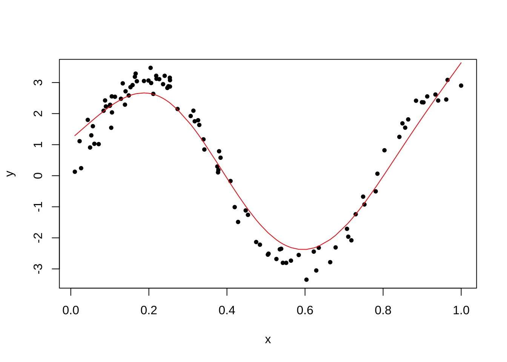
유효 자유도를 증가시키면 추정된 평활곡선은 다음과 같이 나타난다.
par(mfrow = c(2,2))
n = 100
x = runif(n)
y = 3*sin(8*x) + rnorm(n,0,.3)
fitsm15= smooth.spline(y ~ x, all.knots=T, cv=T, df=15)
fitsm50= smooth.spline(y ~ x, all.knots=T, cv=T, df=50)
fitsm70= smooth.spline(y ~ x, all.knots=T, cv=T, df=70)
plot(x,y,pch=20, cex=0.6)
title("effective degress of freedom = 5")
lines(fitsm5,col="red")
plot(x,y,pch=20, cex=0.6)
title("effective degress of freedom = 15")
lines(fitsm15,col="red")
plot(x,y,pch=20, cex=0.6)
title("effective degress of freedom = 50")
lines(fitsm50,col="red")
plot(x,y,pch=20, cex=0.6)
title("effective degress of freedom = 70")
lines(fitsm70,col="red")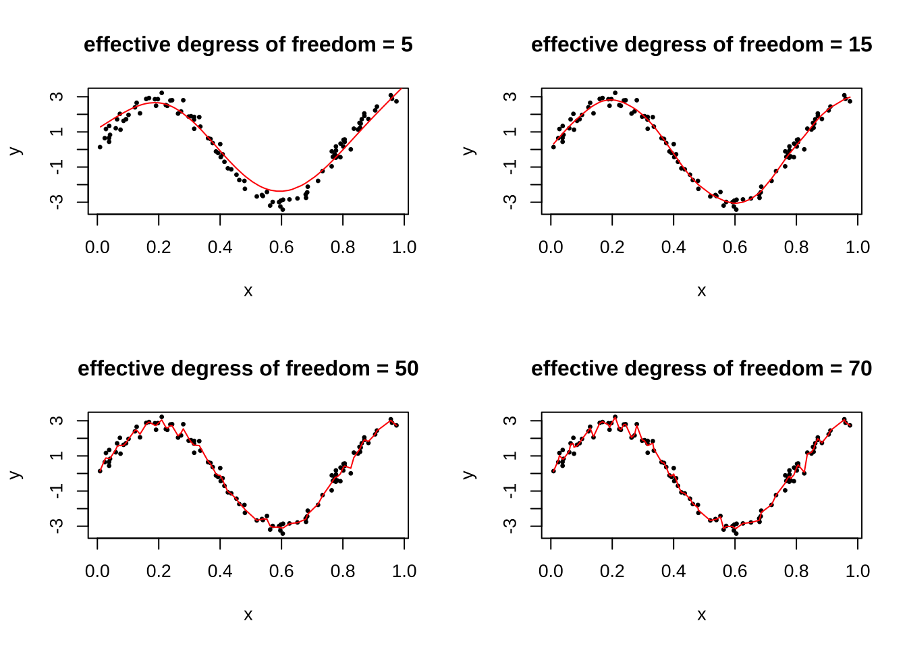
만약 유효 자유도를 지정해주지 않으며 CV를 최소화해주는 자유도를 구하여 자동으로 스플라인함수를 추정해준다. 아래에서 구해진 평활모수는 \(\lambda = 0.000122\) 이고 자유도는 \(df = 11.34031\)이다.
par(mfrow = c(1,1))
n = 100
x = runif(n)
y = 3*sin(8*x) + rnorm(n,0,.3)
fitsmauto= smooth.spline(y ~ x, all.knots=T, cv=T)
fitsmautoCall:
smooth.spline(x = y ~ x, cv = T, all.knots = T)
Smoothing Parameter spar= 0.8712038 lambda= 0.0001931802 (15 iterations)
Equivalent Degrees of Freedom (Df): 10.32359
Penalized Criterion (RSS): 9.280936
PRESS(l.o.o. CV): 0.1129098plot(x,y,pch=20, cex=0.6)
lines(fitsmauto,col="red")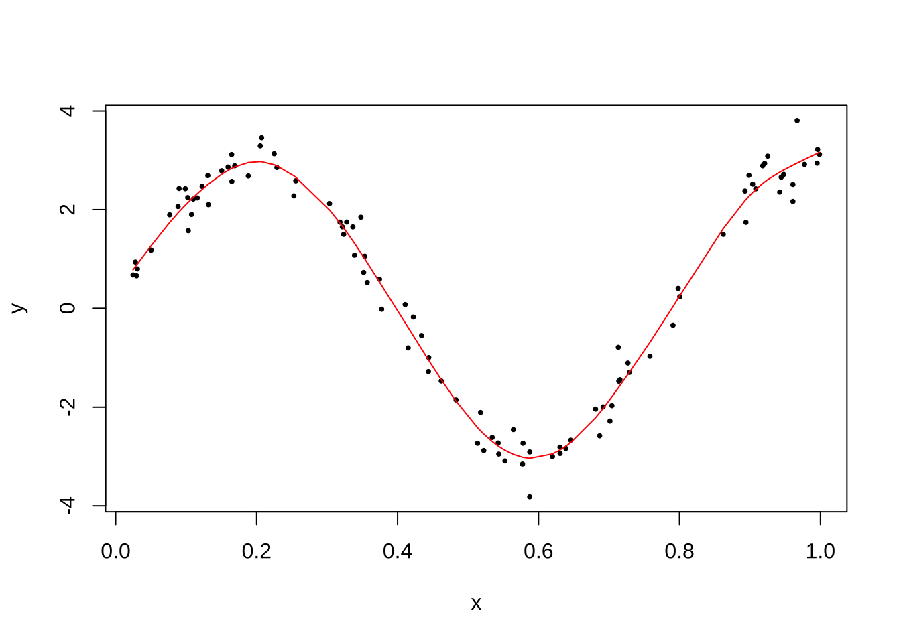